Introducción
- Manager cronometra tus carreras de slot. Recibe las vueltas de tu cronometrador: un DS (como el DS-300), un BART o un TicTac.
- La pantalla de inicio tiene arriba un buscador, debajo la carrera en curso (si la hay) y después un botón para cada sección.
- ¿Te sobran botones? Pulsa «Personalizar» y elige el modo Básico: verás solo lo que necesita un club.
- Abajo a la derecha, el punto verde te dice que el cronometrador está conectado.
Ver todos los detalles (para quien quiera saberlo todo)
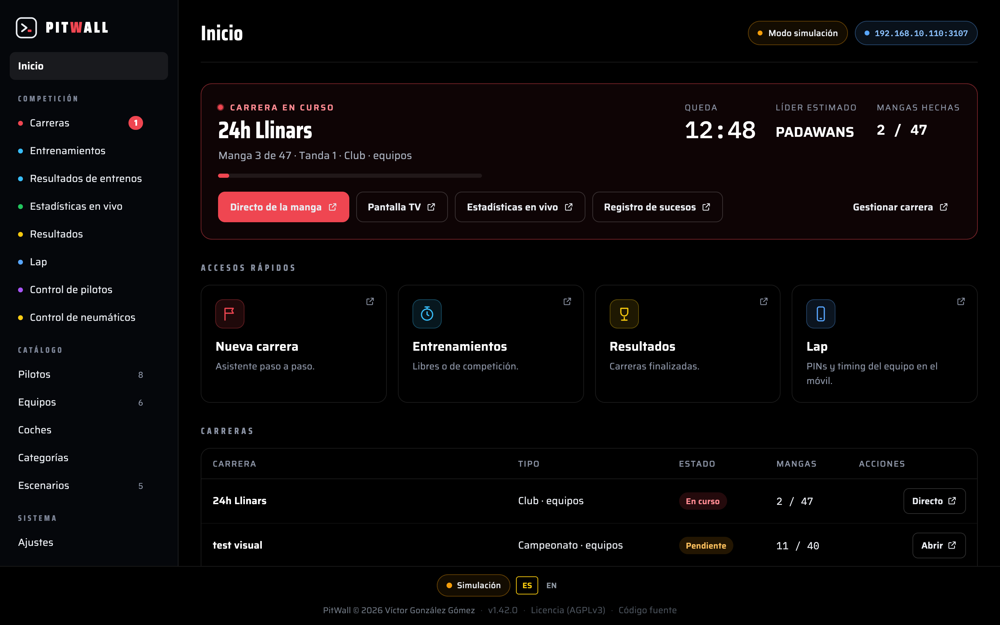
PitWall es el sistema de cronometraje y gestión de carreras de slot. Detecta el paso de cada coche por la línea de meta a través del hardware de cronometraje, con varias opciones compatibles:
- DS (DS-300, DS-200, DS-030 o DS-080) — por puerto serie. Puedes unir hasta 6 circuitos DS-300 en una sola carrera: cada caja cronometra sus carriles y PitWall los combina. Cada caja va por su propio puerto (una caja = un puerto).
- DS-300 agrupador — cuando un aparato agrupador junta varias cajas DS-300 (de 2 a 4) en un solo puerto COM. PitWall separa las cajas por su identificador de trama y numera los carriles de corrido (caja 1 → 1–8, caja 2 → 9–16, y así hasta 32 carriles con 4 cajas). Una única señal de salida arranca todas las cajas a la vez.
- BART (Policar) — por Bluetooth. Admite hasta el máximo de carriles que permita BART (actualmente 32). Con más de 8 carriles hacen falta varios Master BART independientes (p. ej.
BART_TRACK1,BART_TRACK2…), uno por cada bloque de carriles: PitWall se conecta a cada uno por separado y numera los carriles de corrido, igual que con el agrupador DS-300. - TicTac (interface TicTacSlot «Cuentavueltas») — por USB. PitWall lo detecta solo. Con este aparato PitWall dirige la carrera desde sus botones y el interface da y corta la corriente de la pista (ver Dirigir la carrera en vivo).
Puedes usar cualquiera de estas fuentes; para PitWall el flujo de cruces es equivalente.
- La pantalla de inicio tiene arriba una cabecera con el buscador «Ir a…» (atajo ⌘K en Mac o Ctrl K): escribe parte del nombre de una sección o de una carrera; Intro abre el primer resultado y Esc limpia la búsqueda. A su lado, unas píldoras muestran el estado de la fuente de datos (simulación o la fuente real —«DS-300 ×2», «DS-200», «BART», «TicTac», o combinadas como «DS-300 + TicTac»—, conectada o sin conexión) y la dirección IP del servidor, para conectar móviles y pantallas.
- Si hay una carrera en curso, debajo aparece su franja: manga X de Y, tanda, el tiempo que queda de la manga, las mangas (cuenta ya la que se está corriendo) y el líder estimado, que es el mismo de la Clasificación estimada del directo y se actualiza en vivo. Tiene botones a Directo de la manga, Pantalla TV, Corrección de vueltas (de la manga en curso o de la última terminada), Sectores (al acabar una tanda, si la coma está en manual), Estadísticas en vivo, Control de pilotos (en campeonato), Neumáticos (si la carrera tiene juegos), Registro de sucesos y Gestionar carrera. Sin carrera en curso, la franja muestra la pole que esté en marcha o los atajos Nueva carrera / Entreno libre. El inicio se actualiza solo cuando arranca una carrera y al empezar, terminar o pausar una manga.
- Debajo están las secciones en mosaicos: Competición (Carreras, Carrera sprint, Carrera resistencia, Entreno libre, Entreno de competición, Estadísticas en vivo, Resultados, Lap, Control de pilotos, Control de neumáticos…), Catálogo (Pilotos, Equipos, Coches, Categorías y Escenarios, con cuántos tienes de cada) y Sistema (Ajustes, Base de datos, Sincronizar catálogo, Conexión ecosistema, Solución de problemas…). Al final, la tabla de Carreras recientes con su estado, sus mangas y la acción directa (Directo, Resultados o Abrir). Carrera sprint y Carrera resistencia abren el asistente de nueva carrera con el tipo ya marcado. Si hay contraseña de acceso, los botones de Catálogo y Sistema llevan un candado y la piden al pulsarlos; el resto del inicio va siempre sin contraseña (ver Ajustes).
- Cada sección se abre en su propia ventana: si la vuelves a pulsar, PitWall trae al frente la ventana que ya tenías abierta (en la app de escritorio, aunque esté minimizada o hayas vuelto al inicio desde ella). Así puedes tener a la vez el directo, la TV y las estadísticas. Las ventanas abiertas aparecen en la barra inferior del inicio, con Traer para ponerlas delante y ✕ para cerrarlas. Con el interruptor «Abrir enlaces en: Ventana nueva / Esta ventana», que está en la cabecera junto a Personalizar, eliges si prefieres abrirlo todo en la misma ventana, y Mayús + clic abre un enlace aquí mismo sin tocar el interruptor.
- Abajo a la derecha siempre ves el estado del enlace (verde = conectado; "Sin señal" = revisa el cable/puerto o el Bluetooth).
Personalizar el inicio. En la cabecera, a la derecha, están el interruptor «Abrir enlaces en» y el botón «Personalizar», que abre un diálogo para elegir entre cinco diseños del inicio:
- A + C · Mando con lanzador (por defecto): buscador, franja de la carrera, mosaicos y barra de ventanas.
- A · Centro de mando: franja grande, tarjetas de competición, catálogo en lista y sistema.
- B · Menú lateral + panel: menú a la izquierda, tarjetas de estado y tabla de carreras.
- C · Lanzador compacto: buscador, franja fina y mosaicos, con la barra de ventanas abajo.
- D · Mando con menú lateral: menú a la izquierda con la franja grande y accesos rápidos.
La elección se guarda en el PitWall, no en el ordenador: la verás igual en la app de escritorio y en cualquier navegador que se conecte. Lo explicado arriba corresponde al diseño por defecto; los demás reparten las secciones de otra forma (no todos llevan el buscador «Ir a…» ni la tabla de carreras).
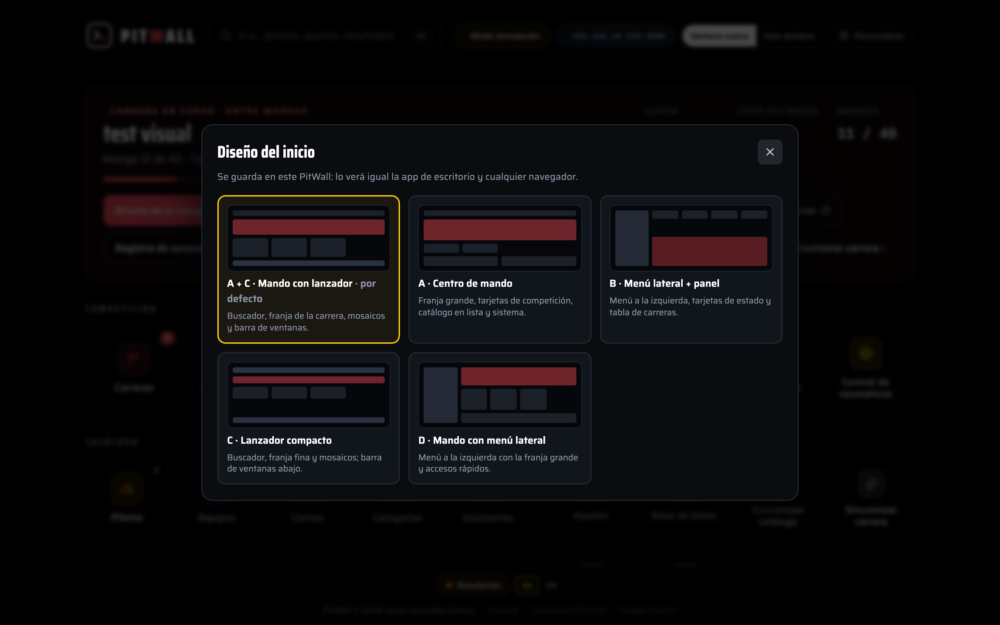
Modo básico / avanzado. En el mismo diálogo Personalizar (o en Ajustes → Preferencias → «Modo de la app») eliges cuántos accesos muestra el inicio. El modo Básico deja lo justo para un club: en Competición, Entreno libre, Carrera sprint, Carreras (con el número de carreras en curso) y Resultados; en Catálogo, Categorías y Escenarios; y en Sistema, Ajustes, desde donde se vuelve al avanzado. Además, la tabla de Carreras recientes sale en todos los diseños para abrir de un toque las carreras ya creadas. El modo Avanzado (el de siempre) lo muestra todo. El cambio se guarda al momento, sin cortar el cronometraje, y la franja de la carrera en curso es igual en los dos modos.
El listado de carreras te muestra todas tus carreras con su estado (pendiente / activa / terminada) y el botón + Nueva carrera.

Escenarios, categorías y catálogos (tu biblioteca)
- Guarda tu pista una sola vez como escenario: cuántos circuitos y carriles tiene, en qué orden cambian de carril los pilotos y la vuelta mínima.
- Da de alta también a tus pilotos, equipos y coches.
- Al crear una carrera solo eliges el escenario y los pilotos: lo demás ya está puesto.
Ver todos los detalles (para quien quiera saberlo todo)
Para no reconfigurar lo mismo en cada carrera, PitWall guarda plantillas reutilizables que después eliges al crear una carrera.
Escenarios (circuitos guardados)
Un escenario es una pista física guardada: nº de circuitos y carriles (p.ej. 8+8+8 = 24), su secuencia de carriles (rotación) y el tiempo mínimo por defecto. Cualquier carrera asignada a ese escenario hereda todo automáticamente.

Al editar un escenario defines su nombre, la configuración de carriles, arrastras la secuencia de rotación (con descansos DSC si sobran pilotos), el tiempo mínimo por defecto y, opcionalmente, vueltas mínimas por categoría (un Pt distinto para GT, Turismo, Clásicos… en esa misma pista).

Colores de los carriles. En la ficha del escenario, el bloque Colores de los carriles tiene una muestra por carril. Marca Usar colores propios en este circuito y pulsa cada muestra para elegir su color, así la pantalla coincide con los colores pintados en la pista; Copiar los colores globales parte de la paleta general. Sin marcar, el escenario usa los colores globales de Ajustes → Preferencias. Los colores se ven en todas las pantallas (directo, TV, paneles, entrenos, pole, tandas y resultados) y el número del carril sale en negro o en blanco para que se lea bien sobre cualquier color.
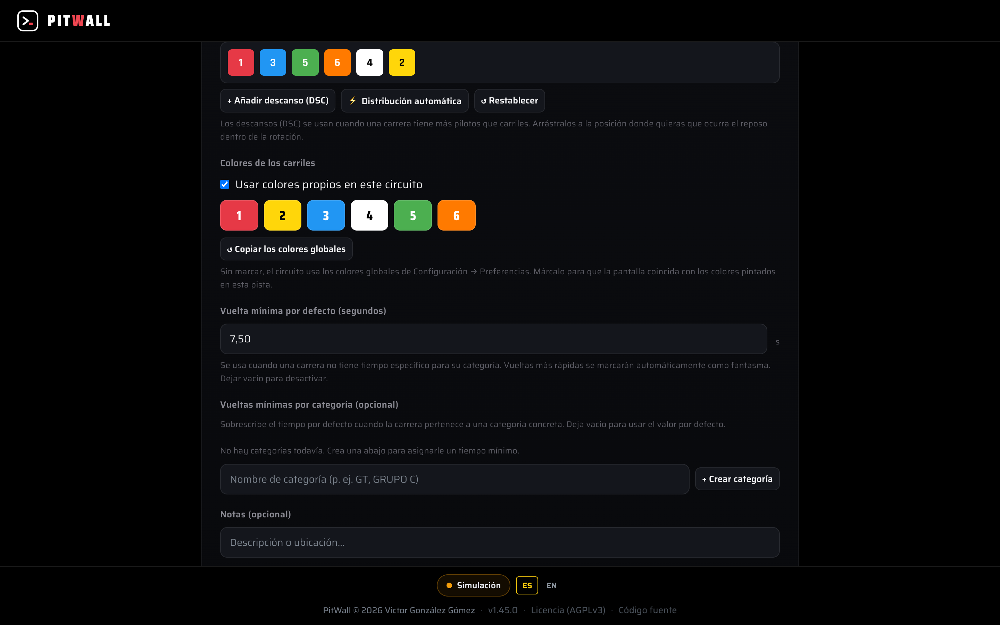
Categorías
Grupos de nivel/clase (GT, Turismo, Clásicos…) que sirven para sobrescribir el tiempo mínimo (Pt) por categoría en cada escenario y para clasificar coches y pilotos.

Catálogos reutilizables (pilotos, equipos, coches)
Mantén tu base de datos de participantes y material para reutilizarla entre carreras:
- Pilotos — nombre y categoría; cada piloto puede tener su QR de identificación.
- Equipos — nombre, color, país (con su bandera; junto a las banderas de país estándar hay banderas propias dibujadas para Catalunya y Euskadi), categoría (coloreada igual que en el directo), coche y miembros.
- Coches — marca, modelo y categoría.
Todos se pueden importar en bloque desde CSV (botones Plantilla CSV e Importar CSV, con vista previa de novedades vs. duplicados) y exportar.
En los tres catálogos tienes un buscador arriba: filtra mientras escribes (en pilotos, también por categoría) y te dice cuántos coinciden del total. La tecla / te lleva al buscador y Esc lo limpia; si entras a editar una ficha y vuelves, el filtro sigue puesto.
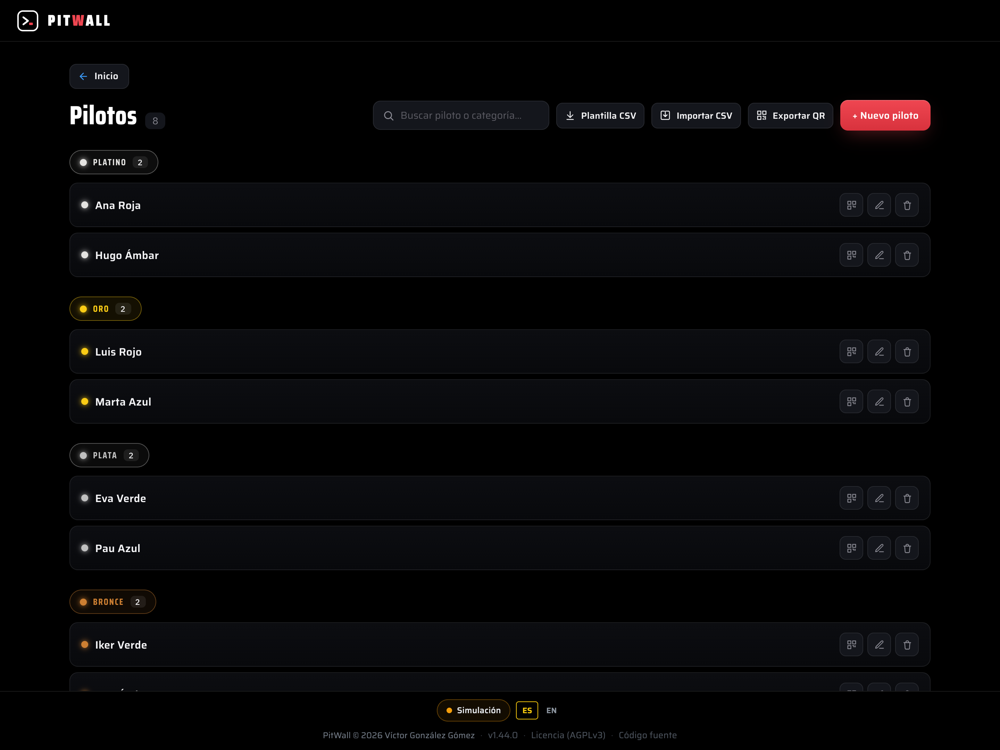

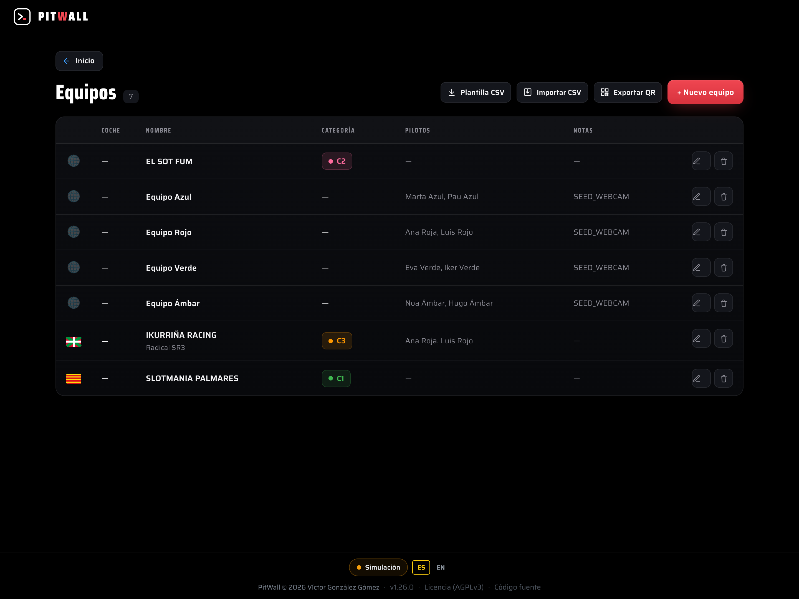
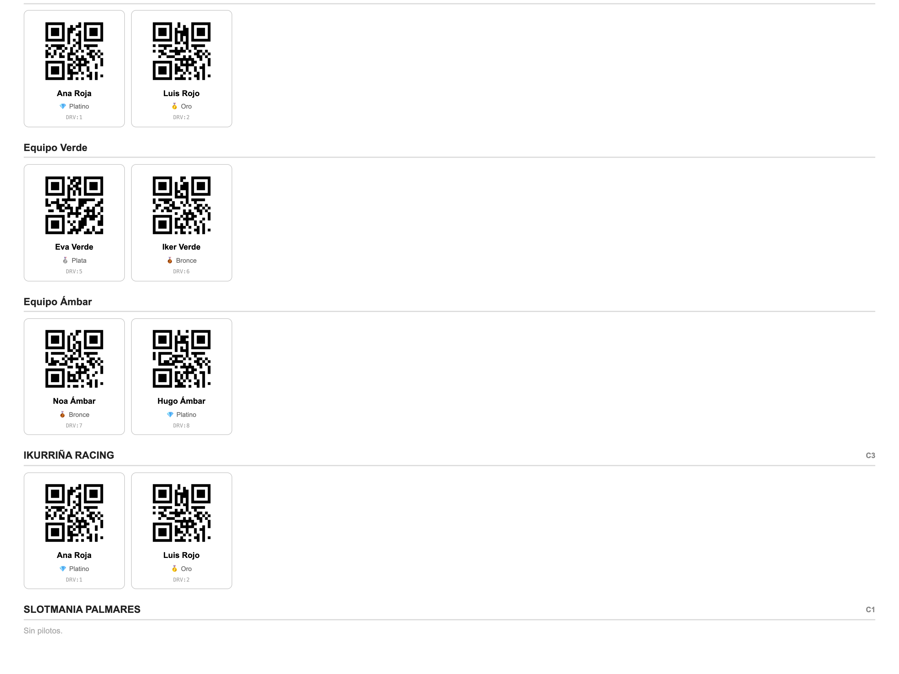
Crear una carrera
- En el inicio, pulsa Carrera sprint (o Carrera resistencia, para carreras largas por equipos).
- Escribe el nombre, elige tu escenario y decide si habrá pole.
- Sigue el asistente hasta Confirmar. La carrera queda lista.
Ver todos los detalles (para quien quiera saberlo todo)
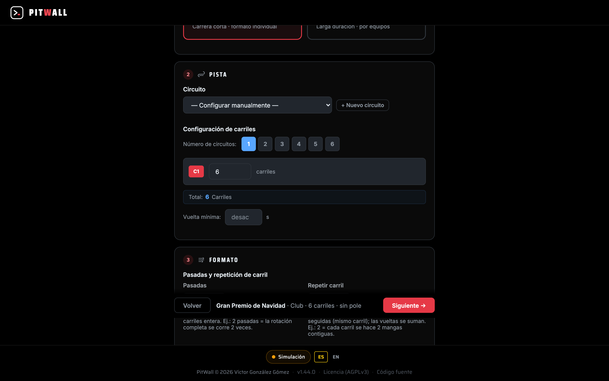
Pulsa Carrera sprint o Carrera resistencia en el inicio, o + Nueva carrera en el listado de carreras, y sigue el asistente.
- Tipo: si entras por Carrera sprint o Carrera resistencia no se pregunta: el título ya dice Nueva carrera sprint o Nueva carrera de resistencia, y el enlace Cambiar a resistencia / Cambiar a sprint lo cambia. Desde + Nueva carrera lo eliges con dos tarjetas:
- Sprint → una carrera rápida, de pilotos o equipos.
- Resistencia → una carrera de resistencia (por equipos), que añade el control de cuánto ha corrido cada piloto del equipo (ver Control de turnos de piloto).
- Nombre de la carrera.
- Circuito: elige un circuito guardado y se resume en una línea (p. ej. «24 carriles · 3 circuitos (8 + 8 + 8) · vuelta mínima 6,00 s»), sin nada más que rellenar. Con — Configurar a mano — aparecen el nº de circuitos, los carriles de cada uno (p. ej. 8+8+6 = 3 cajas DS) y la vuelta mínima (Pt): por debajo de ese tiempo, un cruce se considera fantasma (rebote/doble lectura) y no cuenta. Si el circuito tiene tiempos por categoría, aparece también Categoría.
- Pole position: Sin pole o Con pole (el más rápido elige carril primero).
- Categoría y coche (opcional): dos interruptores, Categoría / copa y Coche, para anotar por equipo o piloto la copa en la que corre y el coche con el que participa (ver Tandas, participantes y rotación). Vienen apagados por defecto: con ellos apagados nada cambia. La categoría se muestra junto al nombre en el directo; con los interruptores activos, categoría y coche salen además como columnas junto al nombre en el Excel de resultados.
- Reglas de resistencia (solo en resistencia): mínimo y máximo por piloto (en minutos), máximo de turnos, neumáticos (en pares por equipo) y Sin cambios al final (los últimos segundos de cada manga, en los que no se puede cambiar de piloto). Lo que dejes en blanco no se controla.
- Más opciones (plegado; se abre solo si alguno es mayor que 1):
- Pasadas: cuántas veces se recorre la secuencia de carriles entera. 2 pasadas = la rotación completa se corre 2 veces (el doble de mangas).
- Repetir carril: cada carril se corre este nº de mangas seguidas (mismo carril), sumando las vueltas — para comparar cada repetición.
Una barra fija abajo resume lo elegido junto al botón Siguiente. Antes de continuar, PitWall comprueba que la carrera tenga nombre y tipo y que cada circuito tenga entre 2 y 8 carriles, y te señala lo que falta. En los pasos siguientes (Secuencia, Participantes, Confirmar), Volver te lleva atrás sin perder lo que ya habías rellenado.
Importar una tanda de PitWall Control
- Si llevas el campeonato con PitWall Control, puedes montar allí la prueba y mandarla a Manager sin volver a escribir nada.
- En Manager entra en Carreras → Importar tanda. Verás un número: el PIN.
- En Control pulsa Enviar a PitWall y escribe ese PIN. Manager crea la carrera él solo.
Ver todos los detalles (para quien quiera saberlo todo)

Si organizas el campeonato con PitWall Control (el gestor de temporada), puedes montar allí la prueba —equipos, copas, carriles y rotación— y pasársela a PitWall sin volver a teclear nada. PitWall autocrea la carrera a partir de lo que recibe.
Entra en Carreras → Importar tanda. Hay dos formas de traer la prueba:
- Fichero JSON — en Control pulsas Exportar tanda (JSON) y guardas el archivo; en PitWall lo subes en la pantalla de import.
- Por red (WiFi/LAN) — en Control pulsas Enviar a PitWall: Control descubre tu PitWall en la red local (o le indicas la IP a mano) y pide un PIN de emparejamiento. Ese PIN es el que muestra la pantalla Importar tanda de PitWall — tecléalo en Control para autorizar el envío.
Qué crea PitWall. Cada manga de la prueba de Control se convierte en una tanda, con cada equipo colocado en su carril de salida. Los descansos (D1, D2…) se colocan y rotan como en cualquier rotación (ver Tandas, participantes y rotación).
Con pole. Si la prueba tiene pole (interruptor La carrera tiene pole en Control; al exportar a fichero te lo pregunta), Control no envía el orden de carril. En la pantalla de import de PitWall marca Esta carrera tiene pole: PitWall crea la carrera con la sesión de pole (todos los equipos) y la parrilla se decide después de correr la pole (ver Pole).
Tandas, participantes y rotación
- Una tanda es un grupo de pilotos que corren juntos y cambian de carril en cada manga.
- Añade los pilotos o equipos a la tanda y Manager prepara todas las mangas él solo.
- Si hay más pilotos que carriles, Manager añade descansos.
Ver todos los detalles (para quien quiera saberlo todo)

Una tanda agrupa a los participantes y su rotación de carriles por manga. Al añadir los equipos/pilotos, PitWall genera automáticamente todas las mangas.
Categoría y coche (opcional)
Si la carrera los tiene activados (ver Crear una carrera), al inscribir a los participantes —en el paso de participantes del asistente (carreras con pole) y en la pantalla de nueva tanda— cada equipo o piloto lleva dos campos de texto libre: su categoría/copa y su coche. Los dos son opcionales (se pueden dejar en blanco) y, al inscribir un equipo del catálogo, sus datos se copian como punto de partida. Después se pueden editar desde la tanda —también en el modo solo renombrar de una tanda con mangas ya corridas—: se aplican al guardar y no tocan la rotación. La categoría se ve junto al nombre en el directo y, en el Excel de resultados, categoría y coche salen como columnas.
Cómo funciona la rotación
Cada participante va cambiando de carril manga a manga siguiendo la secuencia configurada (p.ej. 1, 3, 5, 6, 4, 2). Así todos pasan por todos los carriles y las condiciones se igualan.
- Ejemplo (6 carriles, 6 pilotos): en la manga 1 el piloto A corre el carril 1; en la manga 2, el 3; en la 3, el 5… hasta completar la vuelta a todos los carriles.
Rotación a tu gusto
PitWall propone una rotación equilibrada automáticamente, pero puedes gestionarla como quieras: reordena la secuencia de carriles a mano (arrastrando) para decidir exactamente por qué carril pasa cada participante en cada manga.
Descansos
Si hay más participantes que carriles, la secuencia incluye huecos (0 / DSC) que son descansos: en esa manga ese participante no corre. PitWall los reparte de forma equilibrada, pero también puedes colocarlos donde quieras dentro de la rotación (arrástralos a la posición que prefieras).
Carriles vacíos (menos participantes que carriles)
No hace falta llenar todos los carriles: puedes crear una tanda con menos participantes que carriles (basta con uno). Los carriles libres quedan sin coche fantasma que aparezca en vueltas ni clasificación, y no tienen por qué ser los últimos: en el tablero de la tanda deja vacío el carril que quieras (p. ej. en 8 carriles, sin el 1 ni el 8) y la 1ª manga respetará esa colocación. Al pie del formulario, Carriles sin participante muestra la opción elegida; pulsa Modificar para cambiarla:
- Pasar por todos los carriles (por defecto): el hueco va cambiando manga a manga y todos acaban corriendo en todos los carriles, así que la pista queda igual de justa que con la rejilla completa.
- No pasar por los carriles vacíos: los carriles que dejes sin participante no se usan en toda la tanda; la rotación va solo por los ocupados.
- No pasar por los últimos carriles vacíos: los carriles libres del final no se usan nunca (el comportamiento de versiones anteriores); si dejas un hueco en medio, ese sí va rotando.
Con pasadas / repetir carril
- 2 pasadas → la secuencia entera se repite: 1,3,5,6,4,2, 1,3,5,6,4,2.
- Repetir carril 2 → cada carril, dos mangas seguidas: 1,1,3,3,5,5,6,6,4,4,2,2.
Nombres repetidos
Al crear o editar una tanda, PitWall comprueba los nombres (sin distinguir mayúsculas, acentos ni espacios de más). Si un piloto o equipo sale dos veces en la misma tanda, no deja guardar, porque no se sabría quién es quién: cambia o quita el repetido. Si ya está en otra tanda de la carrera, avisa con la lista de nombres y tandas y te deja elegir entre Revisar y Guardar igualmente, porque a veces es lo correcto (por ejemplo, los mismos equipos en dos sesiones de entreno).
Editar carrera, tandas y mangas
- Después de crear una carrera puedes cambiarle el nombre y, mientras no se haya corrido ninguna vuelta, el escenario.
- También puedes retocar las tandas y las mangas que aún no se han corrido.
Ver todos los detalles (para quien quiera saberlo todo)
Después de crear una carrera puedes retocarla:
- Editar carrera — cambiar el nombre y, mientras no haya vueltas registradas, el escenario. Puedes asignar un escenario a una carrera que no lo tenía, cambiarlo por otro o quitarlo. Al asignar un escenario, la carrera hereda sus carriles, su secuencia de rotación y su tiempo mínimo (y las vueltas mínimas por categoría, si las tiene), y PitWall regenera las tandas pendientes con esa configuración; al quitarlo, la carrera pasa a modo manual conservando la configuración que tenía. Si ya hay vueltas, el escenario queda bloqueado (para no romper los datos).

- Reglas de resistencia (turnos y neumáticos) — en una carrera de resistencia, y mientras no se haya corrido ninguna manga, Editar carrera te deja ajustar también las reglas de turnos por piloto (mínimo y máximo por piloto, máximo de turnos y bloqueo del final de manga) y los neumáticos por equipo (la dotación con la que arranca el control de neumáticos) — los mismos campos que fijaste en el asistente al crear la carrera. Así puedes corregir un número sin rehacer la carrera. En cuanto rueda la primera manga, esos campos se bloquean (atenuados y con un candado 🔒) para no descuadrar lo ya corrido; el nombre y el escenario siguen sus reglas de siempre. Si pones un máximo por piloto menor que el mínimo, PitWall te avisa.
- Categoría y coche (opcional) — los dos interruptores del asistente (Categoría / copa y Coche) se pueden encender o apagar en cualquier momento, también con la carrera en marcha: solo cambian lo que se anota, se muestra y se exporta por participante, nunca el cronometraje ni el calendario. Al apagarlos, los datos ya anotados no se borran: si los vuelves a encender, reaparecen.
- Editar tanda — cambiar los nombres de los participantes y, si la tanda aún no ha empezado, su composición. Si ya tiene mangas iniciadas, entra en modo solo renombrar (no se añaden ni quitan participantes, para no descuadrar la rotación). Al rehacer las mangas, cada participante conserva sus carriles de la 1ª manga, huecos incluidos.

- Editar manga — cambiar quién corre en cada carril en una manga concreta, sin regenerar toda la tanda (útil si un equipo no se presenta o hay un cambio de última hora).
Pole (clasificación previa)
- La pole es una vuelta de clasificación antes de la carrera para decidir el orden de salida. Es opcional.
- Actívala al crear la carrera y lánzala desde la página de la carrera → Configurar Pole Position.
- Todos corren por el mismo carril, uno detrás de otro, para que los tiempos sean comparables.
Ver todos los detalles (para quien quiera saberlo todo)

La pole es una vuelta clasificatoria antes de la carrera para decidir el orden de salida. Es opcional; se activa al crear la carrera (Pole) y se lanza desde la página de la carrera → Configurar Pole Position.
- Participantes: aparecen todos los inscritos en una cuadrícula numerada (1, 2, 3…) que se ajusta sola al ancho de la pantalla y rellena por columnas —coincidiendo con los grupos de circuito C1/C2/C3—. Ese orden es el orden en que saldrán a hacer su vuelta; puedes arrastrar cualquier participante a mano para cambiarlo, o pulsar 🎲 Aleatorio para barajarlo entero.
- Carril de pole: todos hacen su vuelta clasificatoria por el mismo carril (para que sea comparable). Elígelo con −/+ o con 🎲 Aleatorio.
- Cambio automático de piloto: interruptor junto a Omitir 1er cruce. Con la casilla activa, al terminar el intento de un piloto el botón Siguiente piloto hace una cuenta atrás de 3 segundos y avanza solo, sin esperar el clic manual. Es una preferencia del puesto de control (se guarda en el propio navegador), no de la carrera.
- Pulsa Empezar Pole: cada participante entra por turnos, da su vuelta y PitWall registra su mejor tiempo. En el cronometraje puedes activar Omitir 1er cruce (out-lap) para no contar la vuelta de lanzamiento.
- Cantar tiempos: interruptor en la barra superior del cronometraje, junto a Omitir 1er cruce (out-lap) y Cambio automático de piloto. PitWall canta en voz alta cada vuelta del piloto en pista: «Nueva pole, 11 con 85» si bate la pole vigente, «Mejor vuelta, 11 con 90» si mejora la suya sin batir la pole y, si no, solo el tiempo («11 con 94»). Viene activo y cada navegador recuerda su elección: los invitados que siguen la pole desde otro dispositivo también lo tienen, y cada uno puede silenciar el suyo. La voz habla en el idioma de la página.
- Pole con BART, TicTac o simulación: antes la pole solo arrancaba con el GO de una caja DS. Ahora, con esas fuentes, la pantalla de pole muestra «Pulsa GO para empezar» y los botones GO (con el mismo semáforo de 3 s), PAUSE y REANUDAR. La pole termina sola al agotar el tiempo y guarda la mejor vuelta; Parar, Saltar y Siguiente piloto funcionan como siempre. Con TicTac, el semáforo y el corte de corriente los hace el interface, igual que en las mangas. Con una caja DS no cambia nada y los botones nuevos no aparecen.
- No se presenta: si al participante de turno no se le ve por pista, el botón No se presenta lo salta. La primera vez lo manda al final de la cola —tendrá otra oportunidad cuando le vuelva a tocar—; si se le vuelve a saltar sin haber llegado a correr entre medias, queda marcado Ausente de verdad. Los ausentes no compiten por la pole con un 0.00 como si fuera la vuelta más rápida: aparecen aparte, en su propio bloque, tanto en la clasificación en vivo como en los resultados finales.
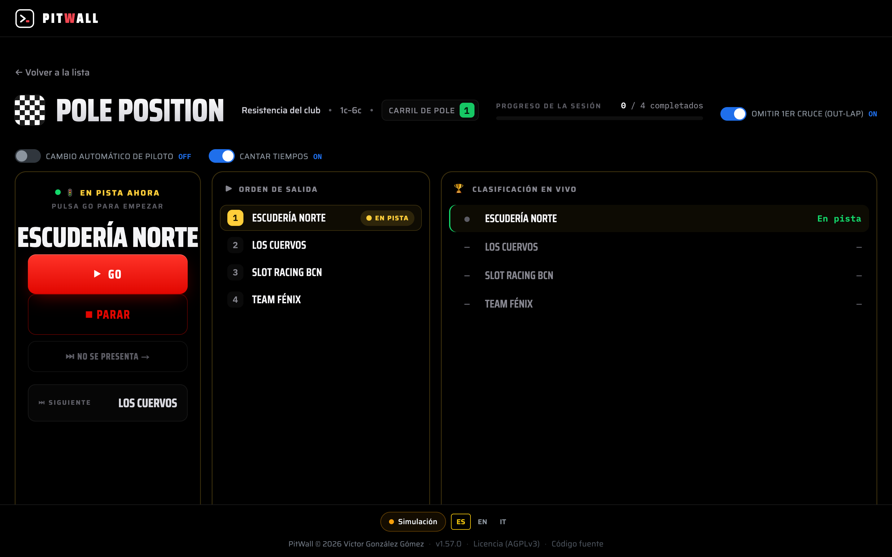
Resultados de la pole
Al terminar aparece Resultados Pole con la clasificación final (del más rápido al más lento, con el gap al líder y la vuelta rápida). Desde aquí puedes ✏️ Editar tiempos si hubo un error, o seguir con 🚦 Asignar carriles de salida.

Asignar carriles después de la pole
La pole no reparte carriles automáticamente: abre la pantalla Elección de carril, donde cada participante elige su carril en orden de clasificación — el poleman (el más rápido) elige primero, luego el 2º, y así sucesivamente. Es el clásico "el más rápido elige carril".

- El banner Eligiendo ahora indica a quién le toca; a la izquierda ves el orden de elección (la clasificación) y a la derecha los carriles disponibles (con su color).
- Cada uno pulsa el carril que quiere; ese carril desaparece de los disponibles y el turno pasa al siguiente.
- Si hay más participantes que carriles, aparecen huecos de 💤 Descanso: quien elija descanso no corre la manga 1 y entra en la rotación desde la manga 2.
- Cuando todos han elegido, pulsa 🏁 Crear Primera Tanda: PitWall crea la tanda y genera todas las mangas con esa parrilla como punto de partida (el orden de elección define la posición inicial en la rotación de carriles). A partir de ahí, la carrera rota los carriles manga a manga como siempre (ver Tandas y rotación).
PitWall Lap — para los equipos
- Los pilotos y equipos pueden seguir la carrera en el móvil, conectados a la WiFi del club.
- Con la app PitWall Lap oyen sus tiempos en voz alta. Sin instalar nada, también pueden verla en el navegador con un PIN.
- Los PIN de cada equipo están en PitWall Lap · PINs de la carrera.
Ver todos los detalles (para quien quiera saberlo todo)

Los equipos pueden seguir su carrera desde el móvil de dos formas, no excluyentes: la vista web con PIN (sin instalar nada, de solo lectura) o la app nativa PitWall Lap (se instala en el móvil, con voz y estrategia de neumáticos en vivo).
Vista web con PIN.
- Entra en PitWall Lap · PINs de la carrera. Verás la dirección que los equipos abren en el móvil (p.ej. http://<IP-del-servidor>:3000/lap/<id>) y la tabla EQUIPO → PIN.
- Da a cada equipo su PIN. Al abrir la dirección e introducirlo, entran directamente a su panel.
- Nuevo regenera el PIN de un equipo (por si se filtró o quieren cambiarlo).
- PIN de acceso — Activado / Desactivado. En la misma hoja de PINs, un interruptor permite quitar el PIN de esta carrera. Con el PIN desactivado, cada equipo entra a su panel de timing solo eligiéndose en la lista, sin teclear nada (útil en eventos internos donde el PIN estorba). Los PINs se conservan por si lo vuelves a activar. Es un ajuste por carrera y viaja también al cronómetro esclavo BART al sincronizar la carrera (Race Link).
- Seguimiento de rivales. En su panel, cada equipo puede seguir hasta 5 rivales y comparar carril a carril vueltas, vuelta rápida y medias (solo de mangas terminadas). La lista se guarda por equipo, así que la comparten todos los móviles del box. Detalle en el Manual de estadísticas, apartado PitWall Lap.
App nativa PitWall Lap (iOS/Android). Es la vía completa: el piloto instala la app en su móvil y, al abrirla, elige la fuente (PitWall o el cronómetro TicTac Slot en solitario, sin servidor detrás) y descubre el servidor sola en la red local en unos segundos — sin URL ni PIN que repartir. Si el auto-descubrimiento falla, se introduce la IP a mano una vez y la app la recuerda para la próxima. Si el servidor tiene varias carreras o tandas activas, deja elegir; después el piloto elige su nombre/equipo de la lista para entrar a su panel.
Comparte con la vista web el cronometraje en vivo y la voz (vueltas, cambios de posición, medio-manga, avisos de tiempo y, en modo avanzado, cada N minutos: media de la manga, media de carrera —con todas tus mangas—, gaps y "media para subir"), y además ofrece:
- Pantalla de carrera para mirarla de reojo: la última vuelta en grande, en morado si es tu mejor vuelta, en verde si estás a menos de un 2 % de ella y en ámbar si vas más lento, con la diferencia debajo (+0.23 vs mejor); tu posición y los gaps con el nombre del rival de delante y de detrás. Si el director pausa, para (STOP) o termina la manga, la app lo muestra y la voz lo avisa; al terminar te dice tu próxima manga y carril. Los ajustes de voz quedan plegados mientras corres, con el interruptor general siempre a mano.
- Estrategia de neumáticos en vivo (carreras de resistencia, con piloto seleccionado): recomienda cuándo cambiar —por degradación real de ritmo, o de forma pautada por vueltas/juegos restantes cuando la goma no pierde ritmo—, con consejo por posición y modelado de la goma de los rivales de delante y detrás. Si la carrera lleva el control de neumáticos del servidor (ver Control de neumáticos de resistencia) y el equipo casa por nombre, la dotación y los cambios los manda PitWall Manager: la app los muestra en vivo (juegos disponibles y último cambio) sin botones manuales. Sin control del servidor, el piloto lleva la cuenta a mano (juegos, cambios obligatorios, coste de parada) y confirma él mismo con Cambié gomas.
- Pole: pantalla propia para seguir tu vuelta de clasificación, el gap a la pole y la clasificación final, si la carrera la tiene.
- Historial y Entrenamiento: carreras pasadas (aunque no las siguieras en directo) y un modo de entrenamiento libre que graba tus tandas de rodaje (vueltas, mejor, media) en el propio móvil, con gráfica y comparación entre ellas.
Manual completo de la app. Cada pantalla de PitWall Lap —menú, Lap, calendario con importación desde Excel, entrenos de competición, resultados y ajustes— está explicada en el Manual de PitWall Lap.
Dirigir la carrera en vivo
- En la página de la carrera, pulsa ▶ para preparar la manga.
- Da la salida (GO) en tu cronometrador: arranca el reloj y empiezan a contar las vueltas.
- Puedes pausar, reanudar o parar la manga. Al terminar, se prepara sola la siguiente.
Ver todos los detalles (para quien quiera saberlo todo)
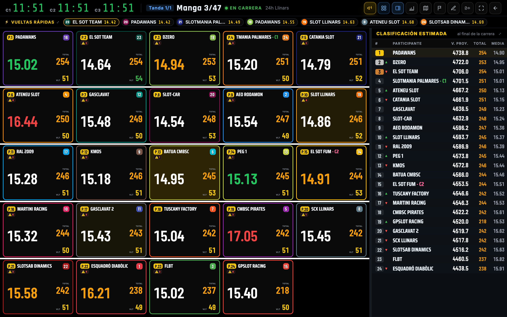
Desde la página de la carrera:
- Armar la manga (▶). Queda preparada esperando el GO de la caja.
- GO: al dar la salida en la caja, aparece el semáforo y arranca el cronómetro. Cada circuito lleva su propio reloj (C1/C2/C3).
- Durante la manga ves por carril: total de vueltas, última, media, mejor, y arriba el banner de vuelta rápida.
- Pausa / Reanudar / Parar la manga cuando haga falta.
- Al terminar (bandera o fin de tiempo), la manga se cierra y se prepara la siguiente.
- Al acabar todas las mangas de una tanda, la carrera se detiene ahí y el GO vuelve al entreno: la siguiente tanda empieza cuando pulsas ▶ Tanda N (ver Quién se lleva el GO de la caja, más abajo). Con la coma en manual, al acabar la tanda aparece el botón Sectores para escribir el sector final de cada participante (ver Vuelta a vuelta y correcciones).
La ficha de la carrera es accesible con una manga en marcha. Entrar en una carrera que tiene una manga en curso ya no te lleva directo al directo: ves su ficha (estado, clasificación proyectada, tandas…) con un enlace «Manga N» para saltar al directo cuando quieras. Al dar el GO desde la ficha, la pantalla sí salta sola al directo, y sigue sin poderse arrancar una segunda manga mientras otra corre.
Cambiar el estado de una carrera. En la ficha de la carrera, junto a la etiqueta de estado, el botón «Cambiar estado» despliega Pendiente (aún no ha empezado), En curso (sale en el inicio y puede recibir el GO) y Completada (pasa a resultados). Sirve, por ejemplo, para reabrir una carrera que se cerró por error o para aparcar una que no vas a correr todavía. No deja cambiarlo mientras haya una manga de esa carrera en marcha. Si pones una carrera En curso y ya hay otra en curso, PitWall te avisa: conviene dejar solo una. Estar en curso no basta para llevarse el GO: ver el apartado siguiente.
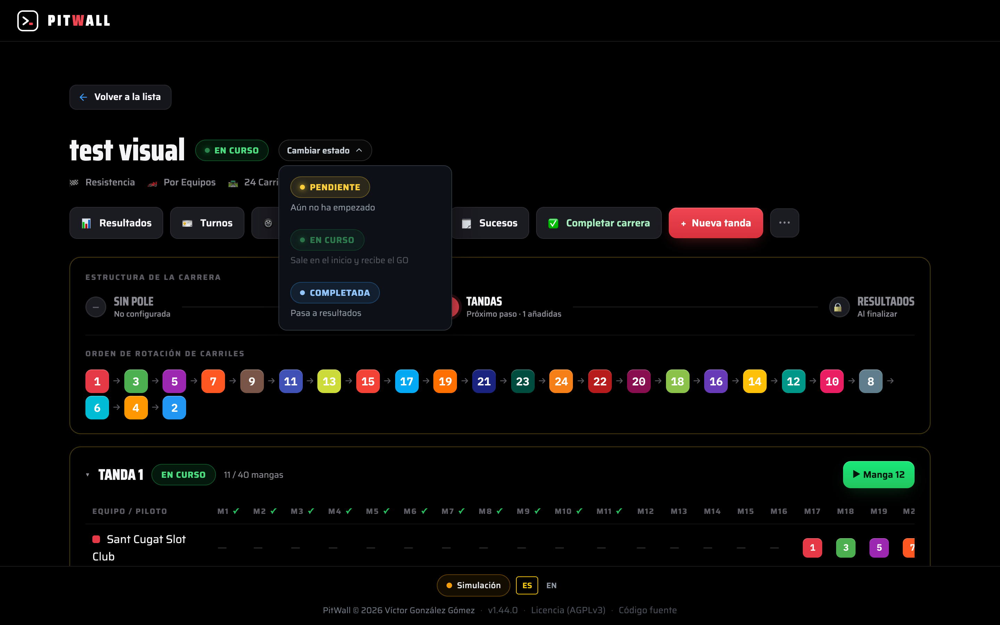
Quién se lleva el GO de la caja
El mismo GO puede arrancar una manga de la carrera o el entreno, y PitWall decide con una sola regla, la misma para la carrera, el entreno y la app de escritorio. El GO es del entreno, salvo que:
- una carrera lo haya pedido: abrir en el ordenador de la pista el directo de la manga que toca correr, pulsar ▶ Tanda N, Repetir una manga o pulsar Recuperar el GO en la franja del directo;
- haya una tanda a medias (entre dos mangas de la misma tanda; también después de reiniciar PitWall);
- haya una pole en marcha.
Para que la carrera arranque, además tiene que haber un directo abierto en el ordenador de la pista, como siempre. Si la carrera no puede arrancar, el GO es del entreno: ya no se pierde ningún GO.
- Al acabar una tanda el GO vuelve solo al entreno, aunque el directo se haya quedado abierto. Para seguir la carrera, pulsa ▶ Tanda N (también después de reiniciar PitWall).
- Mirar la ficha de una carrera ya no la prepara: puedes consultarla sin dejar el entreno sin GO.
- Franja ámbar en el directo. En el ordenador de la pista, si a la carrera le queda algo por correr y el GO no es suyo, el directo lo avisa: «El GO lo tiene el entreno: este directo no arrancará la carrera», con el botón Recuperar el GO. Al acabar una tanda dice «Para seguir la carrera, pulsa «▶ Tanda N»», sin botón. Si el GO lo tiene una pole u otra carrera, también lo dice.
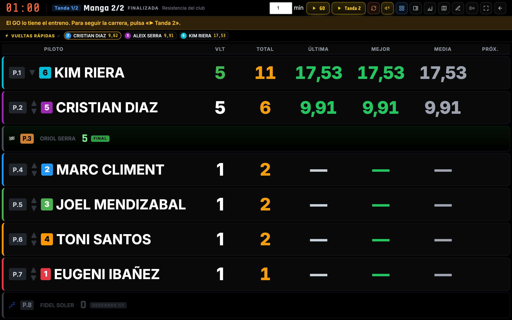
Qué arranca con el GO, caso a caso
Una carrera de 2 tandas: la tanda 1 se corre el jueves y la tanda 2 el viernes. Salvo que se diga otra cosa, hay un directo abierto en el ordenador de la pista. Estos casos están comprobados con el emulador del DS-300:
| Situación | El GO arranca… |
|---|---|
| 1. Carrera preparada; alguien mira su ficha | Entreno |
| 2. Directo abierto por despiste, sin haber abierto el de la manga que toca | Entreno |
| 3. Abren el directo de la manga 1 y luego entran al entreno | Entreno |
| 4. Vuelven al directo de la manga 1 | Manga 1 |
| 5. Tanda a medias, aunque alguien entre al entreno | Manga 2 |
| 6. Fin de tanda con el directo olvidado abierto | Entreno |
| 7. Viernes, tras reiniciar PitWall, con el directo abierto | Entreno |
| 8. Pulsan «Recuperar el GO» sin pulsar «▶ Tanda 2» | Entreno |
| 9. Tras pulsar «▶ Tanda 2» | Manga 1 de la tanda 2 |
Elegir la vista. Con el botón Vista eliges entre tres vistas: Filas horizontales (una fila por carril), Tarjetas con detalles (una tarjeta por carril, legible de lejos) y Tarjetas fijas por carril (ver más abajo). La antigua Cuadrícula compacta ya no existe: si la tenías elegida, se abren las tarjetas.
Tarjetas fijas por carril. Las tarjetas con todos sus datos, pero cada carril siempre en su sitio: con la rotación cambia el nombre que sale en cada tarjeta, no su posición, así que el carril 3 ocupa siempre el mismo hueco de la pantalla. A la derecha va la Clasificación de la manga (vueltas, mejor vuelta y gap con el líder) y, debajo, la general. Quien descansa en esa manga sale en una sola línea bajo la clasificación de la manga.
Las tarjetas. La última vuelta va en grande con el total de vueltas al lado y, debajo, mejor vuelta, media, Gap V y vueltas de la manga; las cifras se ajustan solas al tamaño de la tarjeta, haya 6, 24 o 40 equipos. La última vuelta sale en morado con «RÉCORD CARRERA» si es la vuelta rápida de la carrera y en azul con «BOXES» si fue una parada. Cada tarjeta muestra el piloto al volante con una barra del tiempo que lleva conducido frente al máximo por piloto (ámbar desde el 85 %, roja si lo pasa); si un carril no ha fichado, verás «SIN PILOTO» mientras corre la manga. También avisa de salidas, paradas en boxes («PIT 2») y juegos de neumáticos usados sobre el total («4/12»).
Filas a dos columnas. Si los equipos no caben en una columna, la vista de filas se reparte en dos columnas, cada una con su cabecera, para verlos a todos a la vez (hasta 40 en una pantalla de 1080p). En carreras con control de pilotos, cada fila lleva el piloto debajo del equipo.
La categoría, junto al nombre. Si la carrera tiene activada la Categoría / copa (ver Crear una carrera), cada participante muestra su categoría junto a su nombre en las tarjetas, las filas, la clasificación, la TV, las mejores vueltas y las estadísticas en vivo. En las carreras sprint (de pilotos) antes no salía ninguna y ahora también aparece la de cada piloto. El coche no se muestra en el directo: se ve en la vista Le Mans y en el Excel de resultados.
Orden del directo. En Ajustes → Preferencias → Orden del directo eliges cómo se ordenan tarjetas y filas: por clasificación estimada (recomendado) o por vueltas reales (a igualdad de vueltas, el mismo desempate que la clasificación estimada y los resultados: coma corregida a mano, quién cruzó antes, coma de la última manga). Con vueltas reales no se muestra el Gap V. La clasificación estimada del panel lateral no cambia.
Clasificación estimada al lado. En las dos vistas, el botón con icono de panel lateral (junto a Vista) abre o cierra la clasificación estimada acoplada a la derecha de las filas, como en TicTac: #, participante, V. Proy. (vueltas estimadas), Total (vueltas reales) y Media. PitWall recuerda si la dejaste abierta en cada carrera. De entrada el panel usa el ancho automático (el justo para leer los nombres enteros, como mucho el 40 % de la pantalla) y ajusta la letra para que quepan todos; si no caben, pasa de página cada 20 s. Arrastrando su borde eliges tú el ancho (si sobra sitio aparecen también Gap V y la tendencia) y con doble clic en el borde vuelve al automático. Las filas adaptan su letra al espacio que queda: el nombre del piloto tiene prioridad y, en ventanas muy estrechas, se ocultan primero Gap V, luego VLT y luego ÚLTIMA. En la vista de tarjetas, con el panel abierto las tarjetas quitan mejor vuelta, media y Gap V (ya están en la clasificación) y mantienen las vueltas de la manga bajo el total.
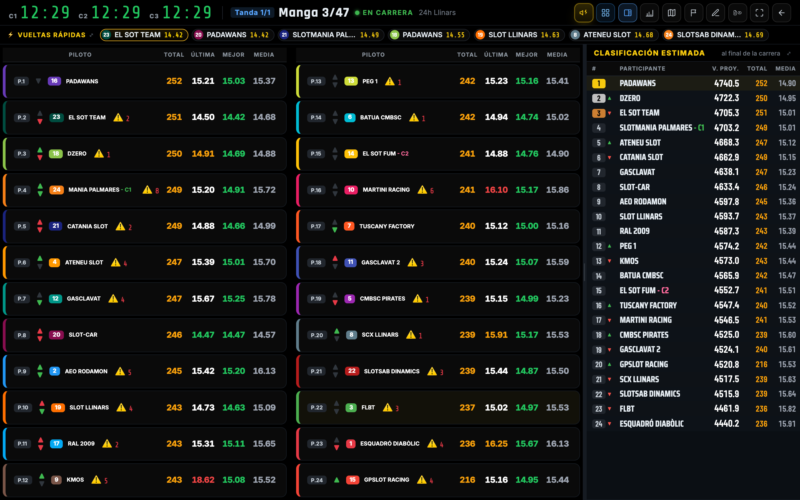
Pantallas fijas de sala o TV. Añadiendo parámetros a la dirección del directo, esa pantalla arranca siempre igual sin tocar lo guardado: ?side=standings (panel abierto) o ?side=none (cerrado), y ?view=1 o ?view=3 (Filas horizontales o Tarjetas con detalles; un enlace antiguo con ?view=2 abre también las tarjetas). Se pueden combinar: ?view=1&side=standings. Con ?view=4 se abren las Tarjetas fijas por carril.
Distancia al líder y estimada provisional. En las pantallas de clasificación (Le Mans y estadísticas en vivo) la distancia al líder se da con la coma y su equivalente en segundos —"a 2,8 v (35,5")"—, no redondeada a vueltas enteras. Y si una estimada lleva un asterisco naranja, es que ese equipo sigue en su primera manga sin haber pasado del 60 %: su referencia aún no está fijada y la cifra puede moverse. Todo esto se explica en detalle en el Manual de estadísticas.
La vuelta de bandera se cronometra. El último paso de cada coche por meta llega un instante después de que caiga la bandera, así que PitWall sigue esperando ese cruce los segundos del ajuste «Espera de cruces tras el final» (Ajustes → Preferencias; 1,5 s por defecto y 0 lo desactiva): si llega, la vuelta de bandera se guarda con su tiempo real, y en el registro de sucesos verás si quedó cronometrada o repuesta. Si el cruce no llega, PitWall repone la vuelta con la media del carril para que no se pierda ninguna. Esta vuelta es también la que fija el desempate a igualdad de vueltas: si dos acaban en la misma manga, va delante quien cruzó antes la meta; si no, decide la coma de la última manga. El Manual de estadísticas lo explica con detalle.
Cuando PitWall dirige la carrera (TicTac, BART y simulación)
Con TicTac, BART o simulación es PitWall quien dirige la manga, y en el directo y en el entrenamiento aparecen los botones GO, PAUSE / REANUDAR y STOP. Con una caja DS no aparecen: manda la caja.
- GO: lanza el semáforo de 3 segundos y arranca la manga con su duración. Con TicTac, PitWall le manda la orden al interface: el semáforo lo hace el propio aparato (el de la pantalla sigue al suyo) y, al ponerse en verde, da corriente a la pista y arranca la manga. Al dar el GO cada carril empieza de cero: el primer cruce cuenta como vuelta de salida.
- PAUSE / REANUDAR: congela el cronómetro de PitWall y los cruces durante la pausa se ignoran. Con TicTac, el interface además corta la corriente al pausar y la devuelve al reanudar (el directo espera un instante a que el aparato confirme la pausa), y el tiempo parado no se suma a la vuelta que queda partida por la pausa.
- STOP: para la manga; con TicTac también corta la corriente.
- Final con TicTac: el fin de tiempo lo da el aparato, que corta la corriente, y PitWall cierra la manga justo al agotar el tiempo. La vuelta de bandera cuenta si el cruce cae dentro de la ventana «Espera de cruces tras el final» de Ajustes → Preferencias (1,5 s por defecto, hasta 10 s), igual que con el resto de dispositivos. Un coche que va a mitad de vuelta cuando se acaba el tiempo y cruza fuera de esa ventana no suma esa vuelta; subir la ventana lo suaviza.
- TicTac en entrenos y pole: los botones funcionan igual en el entrenamiento (libre y de competición) y en la pole. Como el interface siempre necesita un tiempo, el entreno libre sin tiempo se le manda como una sesión larga (9 h) y se termina con STOP.
- Si el interface no contesta: si el aparato no responde a una orden (o no está conectado), PitWall sigue como antes, con su propio semáforo de 3 s y su cronómetro, para no perder la manga. En ese caso la corriente hay que darla y cortarla a mano.
Cambiar de tanda, repetir una manga y finalizar
Desde el propio directo tienes atajos sin salir de la pantalla:
- Siguiente tanda — cuando acaban las mangas de una tanda, pasa directamente a la siguiente.
- Repetir manga — si una manga se dio por mala (falsa salida, incidencia), la vuelves a lanzar con los mismos participantes y carriles.
- Finalizar carrera — cierra la carrera (la "bandera"): se congela la clasificación y se genera el resumen para resultados y para los móviles (PitWall Lap).
Sucesos de carrera
- La página Sucesos apunta todo lo que pasa en cada manga: salidas, pausas, vueltas corregidas, cambios de piloto…
- Sirve para revisar qué pasó si hay una duda o una reclamación.
Ver todos los detalles (para quien quiera saberlo todo)
La página 🗒️ Sucesos —accesible desde la ficha de la carrera y con un botón en la cabecera del directo— muestra, manga a manga, todo lo que va pasando durante la sesión en un formato fácil de leer: GO (también cuando se da en varias cajas por separado, circuito a circuito), pausa y reanudado por circuito, fin de manga, cancelación, recuperación tras un corte, vueltas fantasma/ignoradas y su reasignación al carril correcto, salidas retroactivas, las vueltas de bandera (cronometradas con su tiempo real o repuestas con la media) y los fichajes de piloto (QR, cambio en caliente o corrección manual).
Las mangas se muestran compactadas por defecto —solo la que está en marcha aparece abierta— y se despliegan con un clic en su cabecera. Un checkbox permite ocultar los fichajes de piloto rutinarios previos al GO cuando solo interesa el resto de sucesos.
Control de turnos de piloto (campeonatos)
- En carreras por equipos puedes poner reglas: cuánto tiempo mínimo y máximo debe conducir cada piloto.
- Cada piloto escanea su código QR al entrar a pista y Manager suma su tiempo.
- La pantalla Control de turnos avisa si alguien no cumple las reglas.
Ver todos los detalles (para quien quiera saberlo todo)
En carreras de campeonato por equipos puedes obligar reglas de reparto de volante entre los pilotos de un equipo. Se definen al crear la carrera:
- Tiempo mínimo / máximo por piloto — cada piloto debe rodar al menos X y como mucho Y.
- Bloqueo tras un cambio — un mínimo de tiempo sin volver a cambiar de piloto.
- Máximo de turnos por piloto.
Los cambios de piloto se registran escaneando el QR del piloto (o metiendo su código) al entrar a pista. Desde el directo abres Control de turnos, que muestra el piloto actual por carril, el tiempo acumulado de cada uno (avisando si incumple una regla) y el histórico de turnos; si un cambio se registró mal, puedes corregir el tiempo del turno.
Control de neumáticos de resistencia
- En carreras de resistencia, Manager puede llevar la cuenta de los juegos de neumáticos de cada equipo.
- Indica cuántos juegos tiene cada equipo al crear la carrera.
- Durante la carrera, pulsa la casilla del equipo cada vez que le entregas un juego.
Ver todos los detalles (para quien quiera saberlo todo)
En una carrera de resistencia puedes llevar la cuenta de los juegos de neumáticos que gasta cada equipo. La dotación —los juegos con los que todos parten— se fija al crear la carrera (asistente, paso 1, campo «Neumáticos por equipo»). Con 0 el control queda apagado y todo funciona como siempre.
Se abre de dos formas:
- Desde la carrera, con el botón 🛞 Neumáticos (solo aparece en resistencia y con dotación mayor que 0).
- Como kiosco en /control/tires (en el menú de inicio: Competición → Control de neumáticos), que detecta solo la carrera de resistencia que esté en marcha —igual que el kiosco de turnos—. Es lo ideal para dejar abierto en una tablet junto al box.
La pantalla es una rejilla con todos los equipos. Cada casilla muestra el nombre del equipo y dos números: Disponibles y Usados.
- Un clic en la casilla = entregar un juego: baja uno los disponibles, sube uno los usados y queda anotado en qué manga y en qué minuto:segundo de carrera se hizo el cambio (se sella con la manga en marcha y su reloj; si en ese momento no hay ninguna corriendo, se guarda sin tiempo).
- El lápiz de cada casilla abre el historial de ese equipo, donde puedes borrar un registro (el juego vuelve a Disponibles), editar su manga y su tiempo (mm:ss) o añadir uno a mano (manga, tiempo y una nota).
Los contadores no se guardan a pelo: se calculan a partir de los registros (dotación menos entregas), así que deshacer nunca deja descuadres. Si un equipo se pasa de su cupo, sus Disponibles pueden quedar en negativo y en rojo —pensado para cuando das un juego extra fuera de dotación.
En la cabecera, junto a la dotación, el botón 🗒️ Historial de cambios abre —en una pestaña nueva— una página con el registro global de toda la carrera (no el de un solo equipo). Se presenta como una tabla en columnas (hasta tres columnas) que aprovecha el ancho de la pantalla para verlo casi sin scroll. Los cambios salen agrupados por manga: se listan todas las mangas, y las que no tuvieron ningún cambio aparecen marcadas como «— sin cambios de neumáticos —». Dentro de cada manga, cada entrega muestra el equipo (con su punto de color y su nombre), qué número de juego era para ese equipo (juego N de la dotación, contando por orden cronológico —1, 2, 3…—, en rojo si se pasó de su cupo) y el minuto:segundo de carrera. Los cambios sin manga asignada van a un grupo «Sin manga» al final. Es de solo lectura —para borrar, editar o añadir a mano se sigue usando el lápiz de cada equipo— y se refresca en vivo mientras se dan neumáticos.
En la vista en directo, cada tarjeta de equipo muestra un indicador 🛞 con el número de juegos de neumáticos usados, junto a los avisos de salidas (⚠️) y pit-stops (🔧). Se actualiza al instante —sin recargar— en cuanto anotas un cambio en el control de neumáticos, y destella cuando el número sube. Solo aparece en carreras de resistencia con control de neumáticos, y funciona con la manga en marcha o en espera.
Verificaciones técnicas de PitWall Control
- Si verificáis los coches con PitWall Control, el resultado llega también a Manager.
- En la página de la carrera aparece el botón Verificaciones para consultarlo. Desde Manager solo se mira; no se cambia.
Ver todos los detalles (para quien quiera saberlo todo)
Si el club pasa la verificación técnica de los coches con PitWall Control, ese resultado también puede llegar a PitWall —por el mismo puente de red que las tandas, con el mismo PIN y el mismo interruptor de Conexión ecosistema (ver Importar una tanda de PitWall Control).
Manga a manga, Control envía el snapshot de lo que tiene verificado por equipo: pesos (inicial, final y mínimo del coche), motor (tipo, rpm, ums), piñón/corona (marca, dientes, diámetro, material), llantas delantera y trasera, trencilla, suspensión, bancada, chasis, neumático, si quedó validado o no, y observaciones —con sus fotos, si las hay.
Cómo se ve en PitWall. En cuanto llega el primer envío, la página de la carrera muestra el botón 🔍 Verificaciones, que lleva a una pantalla con todas las verificaciones agrupadas por manga.
Vuelta a vuelta y correcciones (añadir / quitar vueltas)
- Si el cronometrador no contó una vuelta, o contó una de más, se arregla aquí.
- Abre la corrección de vueltas, elige el piloto y añade o quita la vuelta.
- Puedes hacerlo con la manga en marcha: el cambio se ve al momento.
Ver todos los detalles (para quien quiera saberlo todo)

Desde la carrera (botón de corrección de vueltas en el directo o en resultados) entras al vuelta a vuelta de cada manga. Sirve para arreglar lecturas mal registradas.
- Izquierda: los carriles de la manga; elige el equipo/piloto a revisar.
- Derecha: su lista de vueltas — VLT (nº), TIEMPO, RELOJ (momento de carrera) y Δ ANT. (diferencia con la vuelta anterior).
- Acciones por vuelta:
- Transferir (↔) — pasar la vuelta a otro carril/equipo (si el sistema la asignó mal).
- Fantasma — marcar la vuelta como no válida (no cuenta) sin borrarla; se puede restaurar.
- Borrar (🗑) — eliminar una vuelta.
- Añadir vuelta manual — si faltó un cruce, la añades a mano.
Correcciones con la manga en marcha. Cada corrección se ve al momento en el directo y en la clasificación, sin esperar al siguiente cruce, y la numeración de vueltas sigue bien (por ejemplo, tras añadir una vuelta a mano, el siguiente cruce lleva el número que toca). Si la manga ya ha terminado, el directo que tengas abierto se recarga solo con los datos corregidos.
Sectores finales de la tanda (opcional). La coma (en qué punto de la vuelta iba cada coche al caer la bandera) se calcula sola, y así sigue por defecto. Si el automatismo engaña —un coche que se salió o se quedó parado y sigue «avanzando» en la estimación— puedes escribirla tú, como sector de la pista: pon Ajustes → Preferencias → «Corrección manual de la coma» en Permitir corregirla a mano. Desde entonces, al acabar la última manga de una tanda aparece el botón Sectores en el directo, en la ficha de la carrera (arriba y en cada tanda acabada) y en la franja de la carrera en curso del inicio. Abre la pantalla Sectores de la tanda:
- Una fila por participante con sus vueltas en cada manga (M1, M2…), las Vueltas tanda y las Vueltas totales de la carrera hasta ahora. Son de solo lectura: para cambiarlas, los botones de abajo llevan a la Corrección de vueltas de cada manga.
- La casilla Sectores finales: en qué sector se quedó el coche al acabarse el tiempo de su última manga de la tanda, de 0 a 99 con la escala por defecto (ver Sectores por vuelta en Ajustes). El cálculo automático sale en gris como sugerencia y, si dejas la casilla vacía, se usa ese. Lo escrito se marca «a mano».
- Intro pasa a la casilla siguiente (en la última, guarda) y, al salir de cada casilla, la tabla se reordena por vueltas y sector. Si solo rellenas algunos, un aviso te recuerda que los demás se comparan con el cálculo automático: para un desempate homogéneo, rellena todos o ninguno.
- Guardar sectores los guarda todos de una vez; si alguno no es válido, no se guarda ninguno y te dice cuál. Con varias tandas, el desplegable de arriba salta de una a otra.
A igualdad de vueltas, el sector escrito manda en el desempate, en la clasificación de la tanda y en la final, por delante de «quien cruzó antes la meta». Mientras la tanda no ha terminado, la pantalla lo avisa y no deja escribir. Si vuelves a poner la coma en automática, los sectores escritos se guardan pero no se aplican, y al repetir una manga se borra lo escrito en ella, porque se vuelve a correr. Esta pantalla sustituye a la casilla Coma que había antes en Corrección de vueltas: las comas corregidas con ella se conservan y siguen mandando. El Manual de estadísticas explica el desempate con detalle.
Resultados y exports
- Al terminar, entra en Resultados: verás la clasificación y los tiempos de cada piloto.
- Con Exportar la sacas en Excel; también puedes guardarla en PDF.
- Para entender los gráficos, mira el manual de estadísticas.
Ver todos los detalles (para quien quiera saberlo todo)

Al terminar (o en cualquier momento) entra en Resultados:
- Resultados (parrilla): por participante, cada carril con Rápida / Media / Consistencia / Salidas / Pit-stops. En carreras de pasadas/repetir-carril, cada carril se desglosa en sus ocurrencias (1/2, 2/2) para comparar.
- Progresión / Posiciones / Gap al líder / Gap (rejilla) / Estadísticas avanzadas: distintas vistas de análisis (se explican en detalle en el Manual de estadísticas).
- Pilotos (resistencias por equipos con fichaje QR): por piloto, tiempo al volante, mangas, vueltas, vueltas por hora, mejor, media, consistencia, salidas y pits, por equipo o en una tabla de todos los pilotos (ver el Manual de estadísticas).
- Por carril: en el orden de la clasificación, cada participante con sus vueltas, su sector y, carril a carril, las vueltas que dio y su mejor tiempo. El mejor tiempo de cada carril entre todos sale resaltado, y el sector va en azul si se escribió a mano. El Excel de resultados trae lo mismo en la hoja Clasif. por carril.
- Junto a las vueltas, la clasificación muestra la coma de la última manga en sectores (
+45en vez de+0,45): en azul si se escribió a mano y en gris si es la automática. - Exportar ▾: un único menú reúne Excel, Puntos (xlsx), Puntos (csv), Control (csv), area-corse y Exportar para GitHub, cada opción con una línea debajo que dice lo que hace. El PDF sigue como botón aparte. En resistencias por equipos con fichaje, el Excel trae además una hoja Pilotos (equipo, piloto y sus datos; las vueltas sin fichar en una fila gris «Sin fichar»).
- area-corse: descarga la clasificación general de la carrera en un CSV con el formato que importa la plataforma italiana Area Corse (area-corse.it), para publicar las carreras del club en sus campeonatos. El identificador de piloto del archivo es el interno de PitWall; Area Corse empareja cada resultado por el nombre del piloto o equipo, que va incluido. La columna de sectores usa la escala de Sectores por vuelta de Ajustes → Preferencias (100 por defecto).
- Exportar a Excel (resultados, puntos e informe de turnos) solo funciona con la carrera parada o finalizada: no se puede sacar el Excel mientras una manga está en marcha (ese cálculo es pesado y frenaría el cronometraje, con riesgo de perder un cruce). Si una manga arranca justo mientras se generaba, la exportación se cancela y basta con repetirla al acabar.
- Si la carrera tiene activados los interruptores de Categoría y Coche (ver Crear una carrera), el Excel de resultados añade esas dos columnas junto al nombre en las hojas Clasificación, Mejor vuelta y Resultados. Con ellos apagados, el Excel sale exactamente como siempre.
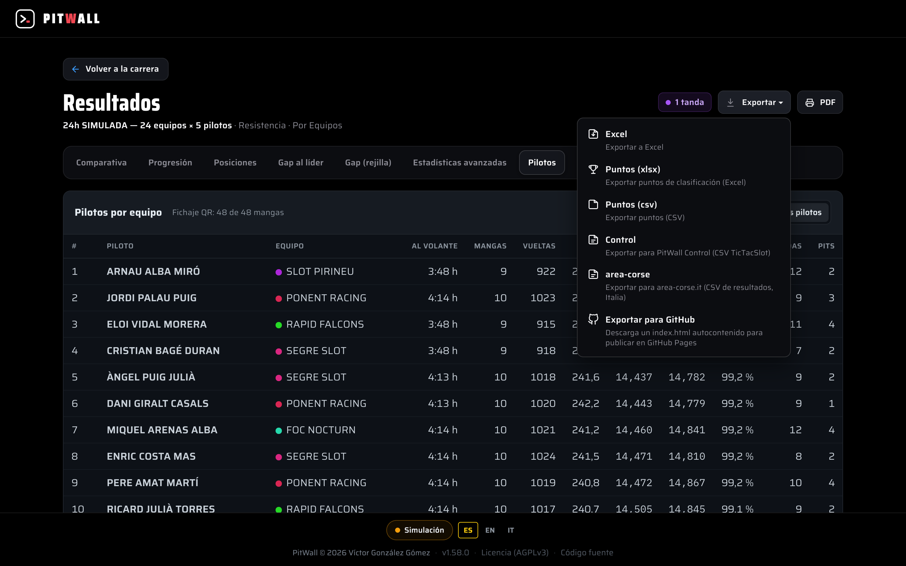
Resultados públicos
Hay una página abierta —Resultados, en el menú de inicio— donde cualquiera puede consultar (sin tocar nada ni poder editar) los resultados de las carreras finalizadas. Es la que compartes con pilotos y público para que miren la clasificación y las estadísticas de la carrera. La página tiene un buscador (por carrera, circuito, o equipo o piloto del podio) y pestañas Todas / Sprint / Resistencia. La última carrera sale destacada arriba, a todo el ancho, y cada tarjeta muestra el tipo, la fecha de fin, el circuito, cuántos pilotos o equipos y cuántas mangas tuvo, el podio con sus vueltas y la vuelta rápida de la carrera.

Entrenamiento
- Para rodar sin montar una carrera, pulsa Entreno libre en el inicio.
- Da la salida en el cronometrador y Manager apunta las vueltas de cada carril.
- Verás las mejores y las últimas vueltas de cada carril.
Ver todos los detalles (para quien quiera saberlo todo)

Además de las carreras, PitWall tiene un modo Entrenamiento (botones Entreno libre y Entreno de competición del inicio) para rodar sin montar una competición completa. Hay dos modalidades:
- Entrenamiento libre: registra vueltas por carril sin estructura de equipos. Ideal para sesiones abiertas donde cada uno prueba coche y pista; no hay rotación ni clasificación, solo tiempos por carril.
- De competición: equipos o pilotos asignados a carriles con rotación automática tras cada tanda, como una carrera pero pensado para entrenar el formato de campeonato.
Elige la modalidad, asigna los carriles y pulsa Empezar. El cronometraje en directo funciona igual que en carrera (GO de la caja, vueltas, mejor/media por carril).
El entreno y el GO de la caja
Al entrar al entreno (abrir el libre o iniciar uno de competición) desde el ordenador de la pista, el entreno se queda con el GO, salvo que haya una manga en marcha, una tanda a medias o una pole (ver Quién se lleva el GO de la caja en Dirigir la carrera en vivo). Desde la TV o un móvil conectados por la red no cambia nada.
- Si el GO no es del entreno, la pantalla lo avisa con el motivo: manga en marcha, tanda N a medias, directo de «X» abierto en este ordenador, pole en marcha o carrera simulada. Si la carrera lo ha pedido pero aún no ha empezado, el aviso trae el botón Ceder el GO al entreno. Este aviso sustituye al antiguo «Hay una carrera activa…», que salía siempre que hubiera una carrera en curso.
- El entreno de competición ya no arranca a la vez que una manga oficial o una pole con el mismo GO.
- La app de escritorio abre el entreno libre al arrancar (si lo tienes activado en Ajustes → Ventanas y pantallas) salvo que el GO sea de una carrera o de una pole; antes bastaba con que hubiera cualquier carrera en curso para no abrirlo.
- Con una caja DS, si alguien da el GO en la caja antes de abrir PitWall, ese GO no llega al programa. Aun así, el entreno libre arranca solo con el primer cruce que traiga tiempo de vuelta (y esa vuelta ya cuenta). El reloj cuenta hacia arriba, porque la duración venía en el GO perdido, y el entreno se cierra con el fin o el STOP de la caja. No arranca si el GO es de una carrera o de una pole, con un entreno de competición preparado, con la caja en pausa ni en los 30 s siguientes a un fin o STOP de la caja, para que un coche que cruza por inercia tras la bandera no abra un entreno. Con TicTac, BART o simulación no cambia nada: ahí el GO lo da PitWall.
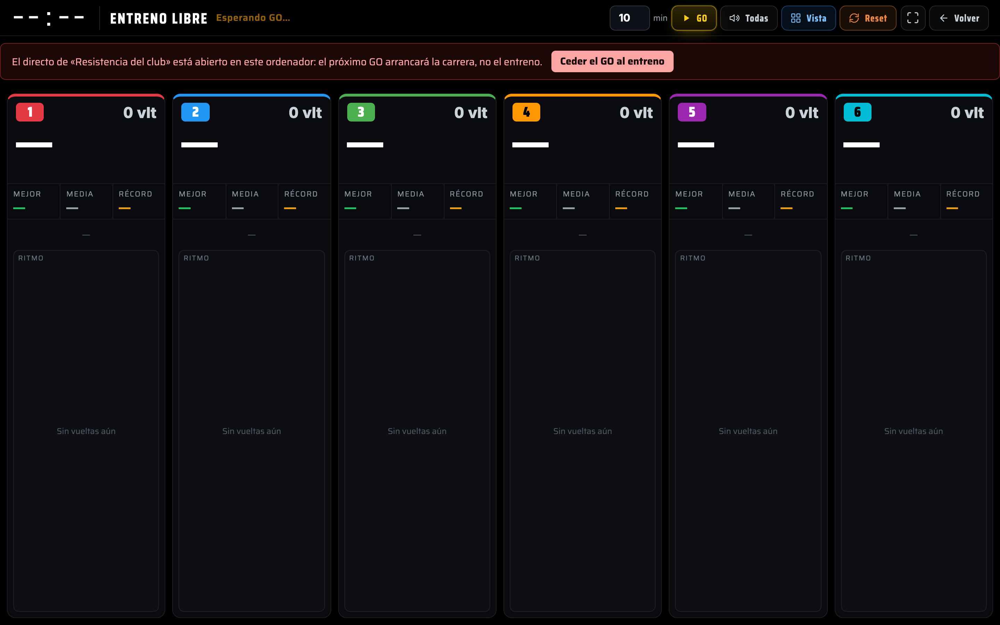
El directo del entreno. Arriba tienes los mismos botones que en el directo de carrera (GO, pausa, STOP, voz, Vista, reiniciar, pantalla completa y Volver). La tarjeta de cada carril muestra:
- la última vuelta y su diferencia con la mejor;
- la fila Mejor / Media / Récord;
- las 10 últimas vueltas (la más reciente arriba) o, si lo eliges en Ajustes → Preferencias → «Historial de vueltas en entrenos», las 10 mejores, de mejor a peor; en grande y cada una con su número de vuelta delante (con un entreno ya abierto, el cambio se ve al recargar);
- un gráfico de ritmo con las líneas de mejor vuelta y media: al pasar el ratón (o el dedo) por un punto ves el número de vuelta, su tiempo y cuánto se aleja de la mejor.
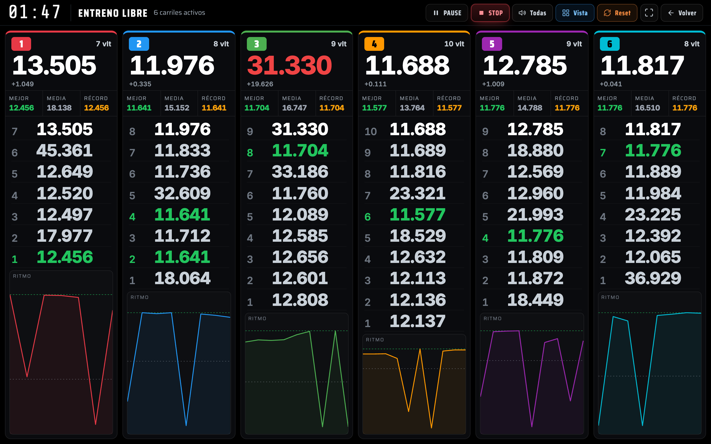
Al acabar la tanda los tiempos se quedan en pantalla. Cuando termina (fin de la caja o fin del tiempo), las vueltas, la mejor, la media y el gráfico de cada carril siguen a la vista para comentarlos; se borran al dar el siguiente GO. El Récord de cada carril se mantiene entre tandas y solo se borra con Reset.
La vista compacta (botón Vista) resume cada carril en poco espacio: la última vuelta con su diferencia, Mejor / Media / Récord y el ritmo en miniatura.
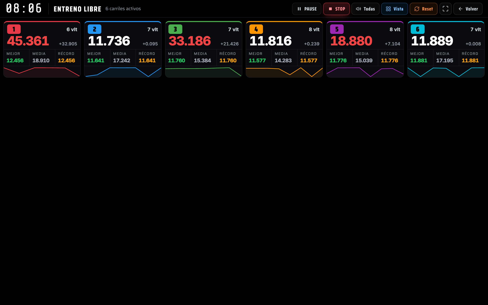
Preparar un entreno de competición. El formulario va por pasos numerados: circuito, participantes y secuencia de cambio de carril. Para añadir equipos, escribe en el buscador del catálogo (Intro añade el primero que coincida). Cada participante se puede subir o bajar de carril; Sortear carriles los reparte al azar y Vaciar todo empieza de cero. Si hay dos participantes con el mismo nombre, PitWall te avisa. En la secuencia, Orden natural la devuelve al orden 1, 2, 3… Una barra fija abajo resume los carriles, cuántos van en pista y cuántos en reserva, junto al botón Preparar sesión.
Los entrenos de competición se guardan. Al caer la bandera de cada heat, PitWall guarda una fila por cada carril que ha rodado, con su participante, sus vueltas, su mejor vuelta y su media. Los participantes que descansan y los carriles sin cruces no dejan fila. Un stop forzado no guarda ese heat: se descarta y se repite entero.
Desde el setup del entreno de competición, el enlace Ver entrenos guardados abre la lista de sesiones (fecha, nº de heats, participantes, vueltas y mejor vuelta), con la más reciente arriba. Al pulsar una sesión ves su detalle con dos bloques:
- Clasificación de la sesión: gana quien más vueltas suma en todos sus heats y, a igualdad, quien tenga la mejor vuelta. La media es la de todas sus vueltas, ponderada por heat (un heat de 40 vueltas pesa lo que debe frente a uno de 3).
- Heat a heat: el desglose de cada heat, carril a carril.
Cada sesión se puede borrar desde su detalle. Si paras la sesión con STOP y llegó a guardar algún heat, PitWall te lleva directamente a sus resultados.
Ajustes
- En Ajustes → Fuente de datos eliges tu cronometrador: DS, BART, TicTac o Simulación para probar sin pista.
- Pulsa Guardar y aplicar. Abajo a la derecha, el punto verde confirma que llegan los datos.
- El resto de ajustes (pantallas, contraseña, red…) puedes dejarlos como vienen.
Ver todos los detalles (para quien quiera saberlo todo)
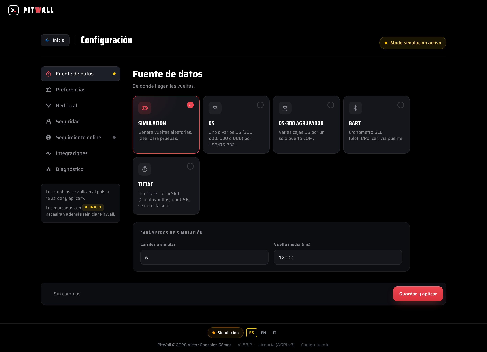
La Configuración se organiza con un menú lateral: Fuente de datos, Preferencias, Red local, Seguridad, Seguimiento online, Integraciones y Diagnóstico. Cada sección va en su pantalla, el menú lleva puntos de estado (cronómetro, túnel, modo debug) y, al guardar, vuelves a la sección en la que estabas. Abajo, una barra fija de guardado te avisa de los cambios sin guardar y de cuáles necesitan reiniciar PitWall (solo la interfaz de red y HTTPS; el resto se aplica al guardar).
- Fuente de datos: elige de dónde llegan los cruces — Simulación, DS (una caja por puerto, con su nº de carriles), DS-300 agrupador (varias cajas por un solo puerto COM: indica puerto, baud —57600, 8N1— y nº de cajas 2/3/4 → 16/24/32 carriles) o BART por Bluetooth (se conecta por BLE directo por defecto; queda TCP en la lista para el emulador o un puente BLE→TCP). Con el agrupador los carriles se numeran de corrido (caja 1 → 1–8, caja 2 → 9–16…) y una sola señal de salida arranca todas las cajas. Si usas varios Master BART (uno por cada bloque de carriles), añade una fila por cada uno con su nombre BLE (p. ej.
BART_TRACK1,BART_TRACK2…) y su nº de carriles: se numeran de corrido igual que las cajas DS-300 del agrupador, y cada Master hay que emparejarlo por separado. - Configuración del puerto, sin líos: en cada circuito DS (y en el agrupador) de un vistazo solo ves Puerto y Baud rate. El puerto se elige de la lista de puertos detectados; si el tuyo no aparece, con «Escribir el path a mano» lo tecleas (p. ej.
COM3o/dev/ttys003). El baud rate es un desplegable con las velocidades habituales (9600–921600), con «Escribir a mano» para un valor fuera de lista. Los ajustes finos de la conexión serie (Data bits, Paridad, Stop bits, Control de flujo) están plegados en «Opciones avanzadas del puerto»: por defecto 8N1 y casi nunca hay que tocarlos. - Modelo de DS: la tarjeta que antes se llamaba «DS-300» ahora se llama «DS». Cada circuito tiene un selector de Modelo: DS-300, DS-200, DS-030 y DS-080. Al elegir modelo, la velocidad (baud rate) pasa a la suya —56000 baudios en el DS-300, 4800 en los demás— y puedes cambiarla a mano. El DS-200 tiene 2 carriles; el DS-080 lleva dos circuitos por un solo puerto (carriles 1–8 y 9–16). Con un DS manda la caja: el GO, la pausa y el fin llegan del propio aparato.
- TicTac (TicTacSlot «Cuentavueltas»): tiene su tarjeta propia en Fuente de datos. Es un aparato USB (no crea ningún puerto COM): PitWall lo detecta solo, basta enchufarlo, aunque PitWall ya esté arrancado. Si lo desenchufas se marca como caído y se reengancha solo al volver a conectarlo. Ajustes muestra su estado: «✓ TicTacSlot detectado por USB», «No se detecta: conecta el interface por USB» o «Lectura USB no disponible en esta instalación». El selector Conexión ofrece «USB (automática)» (por defecto) o «Puerto serie (emulador o puente)», este último solo para pruebas con el emulador. Elige el nº de carriles (1–8). El tiempo de cada vuelta sale del reloj del propio aparato. PitWall le manda las órdenes de arrancar, pausar, reanudar y parar, así que el interface da y corta la corriente de la pista con su relé (ver Dirigir la carrera en vivo). En macOS puede pedirte el permiso «Monitorización de entrada»; en Linux hace falta una regla udev para acceder al USB.
- Qué está probado y qué no: solo el DS-300 está contrastado con aparato real. DS-200, DS-030 y DS-080 siguen el documento de protocolo y están sin probar con hardware; y el TicTac tampoco se ha probado todavía con el aparato físico: el control de la corriente está probado solo con el emulador, y los interfaces que trabajan con el programa TicTac antiguo podrían no admitir esas órdenes. Si los usas, haz una prueba antes de la carrera.
- Preferencias: el Modo de la app (básico o avanzado; ver Introducción), el Historial de vueltas en entrenos (las 10 últimas o las 10 mejores; ver Entrenamiento), el Orden del directo (por clasificación estimada o por vueltas reales; ver Dirigir la carrera en vivo), la Corrección manual de la coma (Automática —recomendado, por defecto— o Permitir corregirla a mano: con lo segundo, al acabar cada tanda sale el botón Sectores para escribir el sector final de cada participante, que manda en el desempate a igualdad de vueltas — ver Vuelta a vuelta y correcciones), los Sectores por vuelta (solo salen con la coma a mano: en cuántos sectores se divide la vuelta, 100 por defecto —la escala de Area Corse—, de 2 a 1000; los sectores van de 0 a ese número menos 1 y, si lo cambias, los ya escritos se reescalan en proporción), la Espera de cruces tras el final (los segundos que, tras el final de una manga, se sigue esperando el cruce que cronometra la vuelta de bandera; de 0 a 10 s, 1,5 s por defecto, y 0 lo desactiva — ver Dirigir la carrera en vivo) y los Colores de carril globales: los que se usan cuando no hay escenario o el escenario no tiene colores propios. Pulsa cada muestra para cambiar su color; Guardar colores los aplica al momento sin tocar la conexión del cronometraje, y Colores de fábrica recupera la paleta original.
- Nombre y logo del club (en Preferencias): escribe el nombre del club (hasta 80 caracteres), elige su logo con Elegir logo… (PNG, JPG, SVG o WebP; PitWall lo reduce solo a 512 px) y pulsa Guardar; Quitar logo lo borra. Mientras «Usar el nombre y el logo del club» esté activado (viene apagado), salen junto al logo de PitWall —que se mantiene siempre— en: los Excel de resultados, de puntos y de turnos de piloto (una banda arriba con el logo y el nombre); los resultados en pantalla, al imprimir/PDF y en la exportación HTML, y el informe de turnos; la cabecera de la pantalla de TV, a la izquierda del nombre de la carrera; y los QR de pilotos y equipos (una banda arriba y el logo pequeño en cada tarjeta). Los CSV no cambian. El logo se guarda en la base de datos, así que entra en las copias de seguridad (máx. 1 MB).
- Ventanas y pantallas (solo en la app de escritorio): elige en qué pantalla y cómo se abre (ventana, maximizada o pantalla completa) cada tipo de ventana: Entrenamiento libre, Directo, TV, Pole en directo y Le Mans. Por ejemplo, el operador en el portátil y el directo a pantalla completa en la pantalla del público. Las pantallas se numeran (1 = la principal, el resto de izquierda a derecha) e Identificar pantallas muestra 3 segundos el número en cada una. La regla vale al abrir la ventana y también cuando una ventana pasa a esa página: la ventana de la carrera que salta al directo al dar el GO, o la pole al pulsar Empezar Pole, se recoloca sola en su pantalla y modo (si estaba a pantalla completa en otro monitor, sale antes de ella). Recargar o pasar de una manga a la siguiente no la vuelve a mover, así que puedes recolocarla a mano. Con el inicio en «Abrir enlaces en: Esta ventana», estas páginas no se cargan en la ventana principal: se abren aparte, en su pantalla (si ya estaba abierta no se duplica), y la principal se queda para el operador; al empezar la pole, la principal vuelve a la página de la carrera. Si la pantalla elegida no está conectada, la ventana se abre en la principal y en modo ventana. El Entrenamiento libre puede además abrirse al iniciar PitWall (no se abre si el próximo GO es de una carrera con una tanda a medias o de una pole). Todo esto se guarda en el ordenador, no en la base de datos, así que no viaja con las copias.
- Red local: interfaz de red, restringir el acceso web y HTTPS local (para la cámara del QR).
- Seguridad: una contraseña para que solo quien la sepa entre en Sistema y Catálogo (ver Contraseña de acceso, más abajo).
- Seguimiento público por internet: publica las vistas públicas en internet para seguir la carrera desde fuera del local (ver la sección siguiente).
- Integraciones (compatibilidad Infolap, que se activa y desactiva al momento) y Diagnóstico (modo debug y herramientas para investigar un problema).
- Actualizaciones (solo en la app de escritorio): buscar, descargar e instalar una versión nueva de PitWall sin salir del programa (ver Actualizaciones, más abajo).
- El idioma (ES/EN) se cambia desde el pie de página.
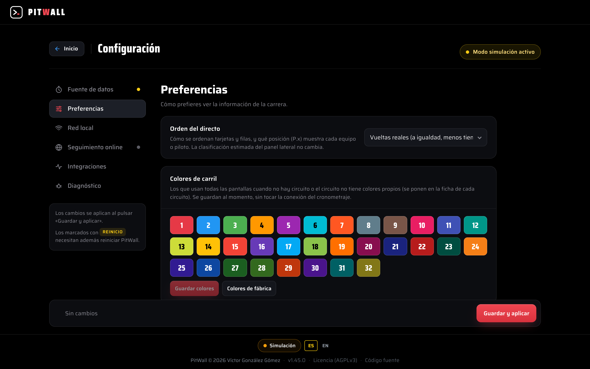
Contraseña de acceso
Sirve para que quien no conoce el programa no toque lo que no debe. En Ajustes → Seguridad activa «Pedir contraseña de acceso», escribe la contraseña dos veces (mínimo 4 caracteres) y pulsa Activar con esta contraseña. Desde ese momento la contraseña protege solo los botones de Sistema (Ajustes, Base de datos, Sincronizar catálogo, Sincronizar carrera, Conexión ecosistema, Solución de problemas y el túnel del seguimiento online) y de Catálogo (Pilotos, Equipos, Coches, Categorías y Escenarios), también en el propio ordenador de PitWall y en la app de escritorio. El navegador desde el que la activas sigue dentro hasta que pulsas Bloquear o Cerrar sesión, y no se toca la conexión del cronometraje.
- Todo lo demás va sin contraseña: el inicio y toda la Competición (carreras y su asistente, entrenos, directo, TV, correcciones de vueltas, control de pilotos y de neumáticos, resultados, estadísticas en vivo), además de Lap (con su PIN), la app móvil, el enlace entre PitWall maestro y esclavo y la importación desde PitWall Control (con su PIN). Así cualquiera puede dirigir una carrera sin saber la contraseña. En el asistente solo la pide + Nuevo circuito, porque abre Escenarios.
- Es compatible con Restringir el acceso web de Red local: se suma a esa restricción por IP.
- Tras 5 intentos fallidos seguidos, ese dispositivo tiene que esperar 30 s para volver a probar. El propio ordenador de PitWall nunca se bloquea.
- En el inicio, sin haber entrado, los botones de Sistema y Catálogo llevan un candado amarillo y la cabecera muestra Entrar. Al pulsar un botón con candado aparece la pantalla de contraseña (con ← Volver al inicio por si no la sabes) y, al entrar, vas directo a esa página. Con la sesión abierta, la cabecera muestra Bloquear, que cierra la sesión al momento (por ejemplo, si dejas el ordenador solo).
- La contraseña sigue activa aunque reinicies PitWall (se guarda en la base de datos). Lo que se pierde al reiniciar es la sesión, así que hay que volver a entrar. Cerrar sesión está en la misma sección.
- Cambiar contraseña pone una nueva; al desactivar el interruptor, la contraseña se borra.
- ¿Se te ha olvidado? Cierra PitWall del todo y arráncalo en modo recuperación, con la variable de entorno
PITWALL_DISABLE_PASSWORD=1: mientras esté puesta no se pide contraseña. Entra en Ajustes → Seguridad, pon una nueva (o desactívala), cierra PitWall y ábrelo otra vez de la forma normal. Cómo arrancarlo así:- Mac (app instalada), en Terminal:
PITWALL_DISABLE_PASSWORD=1 /Applications/PitWall.app/Contents/MacOS/PitWall - Windows, en PowerShell:
$env:PITWALL_DISABLE_PASSWORD=1; & "$env:LOCALAPPDATA\Programs\PitWall\PitWall.exe"(es la ruta de la instalación normal, solo para tu usuario; si lo instalaste para todos los usuarios suele estar enC:\Program Files\PitWall\PitWall.exe) - Linux (AppImage), desde la carpeta donde lo tengas:
PITWALL_DISABLE_PASSWORD=1 ./PitWall*.AppImage - Desde el código (desarrollo):
PITWALL_DISABLE_PASSWORD=1 npm start
- Mac (app instalada), en Terminal:
Base de datos
En Sistema → Base de datos (/database) tienes un menú con Resumen (cuántas carreras, equipos, pilotos, circuitos y vueltas hay, y el tamaño del fichero), Exp. / Imp. carrera, Copia de seguridad y Restaurar copia.
Exportar e importar una carrera
Para llevarte a tu PC una carrera que has corrido en otro club sin mover la base de datos entera. Exportar carrera descarga un archivo .pwrace con todo: equipos, pilotos, tandas, mangas, vueltas, turnos de piloto, neumáticos, sucesos, verificaciones con fotos, pole y categorías (una 24 h de 150.000 vueltas ocupa unos 3 MB). Importar carrera la añade como carrera nueva, al momento y sin reiniciar, sin tocar tus otras carreras; si su circuito no existe en este PC, se crea.
- No se puede importar dos veces la misma carrera: PitWall avisa y te enlaza a la que ya tienes.
- No se exporta una carrera con una manga sin cerrar: ciérrala o cancélala antes en Solución de problemas → Mangas atascadas.
- Una carrera que venía en curso entra como pendiente, para que nunca se quede con el GO del DS de este PC.
- Exportar e importar esperan a que no haya una manga en marcha, igual que la exportación a Excel.
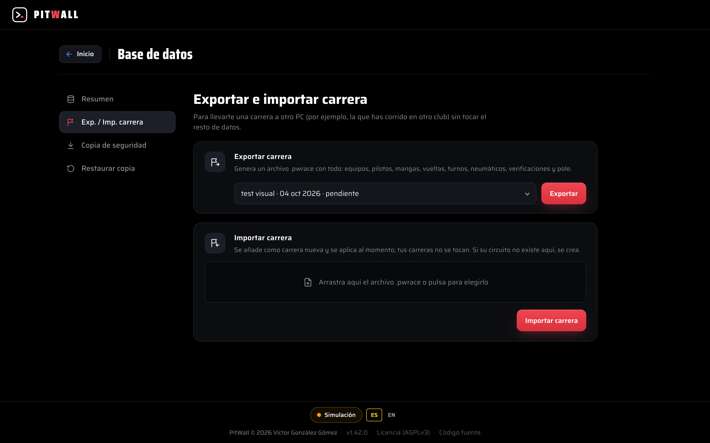
Copia de seguridad de la base de datos
En Copia de seguridad y Restaurar copia puedes descargar un snapshot completo de tus datos (.db) y, si algún día hace falta recuperar una instalación o mover PitWall a otro PC, subir una copia para restaurarla: la subida se valida (tiene que ser una base de datos SQLite real) y queda "pendiente" — no sustituye nada al momento, se aplica solo al cerrar PitWall del todo y volver a abrirlo, y antes de aplicarla se guarda automáticamente una copia de los datos que tenías. Puedes cancelar una importación pendiente en cualquier momento antes de reiniciar.
Copias automáticas. Además, PitWall guarda por su cuenta una copia de la base de datos cada vez que arranca, antes de tocarla, en la carpeta _backups-auto que hay junto a ella. Se conservan las 5 últimas y, con la misma versión, como mucho una cada 6 horas (reiniciar varias veces seguidas no llena el disco); al estrenar una versión nueva se hace siempre. Tarda unas décimas de segundo y, si fallara, nunca impide arrancar. Para recuperar una, súbela en Restaurar copia.
Actualizaciones
En la app de escritorio, Ajustes → Actualizaciones muestra la Versión instalada y mira en pitwall.es si hay una nueva. Lo comprueba por su cuenta al arrancar y cada 6 horas y, si la hay, lo avisa en el pie de página (Nueva versión vX). Buscar actualizaciones lo comprueba al momento, Descargar la baja (con el porcentaje) y Reiniciar e instalar cierra PitWall, lo actualiza y lo vuelve a abrir.
- Nunca se instala con una manga, un entreno o una pole en marcha: PitWall te pide que esperes a que termine.
- Antes de instalar guarda una copia de la base de datos junto a ella (se conservan las 3 últimas). Tus carreras y ajustes no se tocan.
- Se instala solo en Mac, en Windows con el instalador y en Linux con el AppImage. El portable de Windows y el .deb avisan de la versión nueva y abren la web de descarga (Abrir la web de descarga).
- Al instalar se cierran todas las copias de PitWall abiertas en ese equipo. Desde un navegador no sale: la versión nueva se descarga en pitwall.es.
- Se actualizan así las instalaciones desde la v1.65.0; una anterior hay que actualizarla una vez a mano, con el instalador de la web.
Historial de versiones
En el pie de todas las páginas ves el número de versión de PitWall. Al pulsarlo se abre el Historial de versiones (/changelog), con lo Añadido, Mejorado y Corregido en cada actualización. La versión sube con cada actualización, así siempre sabes qué PitWall tienes y qué ha cambiado.
Seguimiento público por internet
- Normalmente la carrera solo se ve dentro del club, en su WiFi.
- Si quieres que se pueda seguir desde casa por internet, actívalo en Ajustes → Seguimiento público por internet.
- El modo Rápido no necesita cuenta: te da una dirección para compartir.
Ver todos los detalles (para quien quiera saberlo todo)

Por defecto las vistas de PitWall (el directo, los Resultados y PitWall Lap) solo se ven en la red local. Con el Seguimiento público por internet cada club puede publicarlas en internet para que pilotos y público sigan la carrera desde fuera del local, sin abrir puertos ni montar una VPN: PitWall levanta un túnel Cloudflare propio del club.
Está en Ajustes → Seguimiento público por internet. Hay dos modos:
- Rápido — PitWall genera una URL temporal (*.trycloudflare.com) al vuelo: sin cuenta ni dominio. Es la opción para una tarde suelta; ten en cuenta que la URL cambia en cada arranque.
- Cloudflare propio — usas el token del túnel del club y tu propio dominio, con lo que la URL es fija y de marca. La propia pantalla trae una guía paso a paso, con enlaces al panel Zero Trust de Cloudflare y a la documentación oficial, para crear el túnel y pegar su token.
Controles. Botones Arrancar / Parar con el estado y la URL en vivo (para copiarla y compartirla). Arrancar aplica lo que tengas en pantalla en ese momento. Puedes activar el autoarranque para que el túnel se levante solo al abrir PitWall.
Instalar cloudflared. El túnel lo levanta la herramienta cloudflared. Si no está instalada, aparece el botón Instalar cloudflared, que descarga la versión oficial a la carpeta de datos de PitWall — sin pedir permisos de administrador.
Glosario (operación)
- Carrera: el evento completo. Se compone de tandas.
- Tanda: grupo de participantes con su rotación; se compone de mangas.
- Manga: una tirada cronometrada (todos los carriles a la vez) de una duración.
- Rotación: cómo cambian de carril los participantes de una manga a otra.
- Descanso: manga en la que un participante no corre (hueco 0 en la secuencia).
- Pasada: recorrido completo de la secuencia de carriles; N pasadas = N× mangas.
- Repetir carril: correr cada carril N mangas seguidas, sumando vueltas.
- GO: la señal de salida (de la caja DS) que arranca la manga.
- Vuelta fantasma: vuelta marcada como no válida (no cuenta), restaurable.
- Salida (⚠️): vuelta que tarda más que la vuelta rápida de ese piloto en ese carril durante la manga + 1,5 s (como las «vueltas lentas» de TicTac); si tarda el doble de su media limpia o más, es parada en boxes (🔧). En directo es provisional: al mejorar la rápida, vueltas anteriores pueden pasar a ser salida.
- Pole: sesión de clasificación previa (opcional); todos ruedan por el mismo carril y su mejor vuelta fija la parrilla de salida.
- Sucesos: página (🗒️) con el registro manga a manga de todo lo que pasa en la carrera —GO, pausas, fin de manga, vueltas fantasma, fichajes de piloto…—, en vivo.
- Entrenamiento libre: modo para registrar vueltas por carril sin equipos ni rotación (sesión abierta).
- PitWall Lap: vista móvil por equipo/piloto (sus vueltas cantadas y su posición).
- PIN: código por equipo para entrar a su panel en PitWall Lap.
- Pt (tiempo mínimo): umbral por debajo del cual una vuelta se considera cruce fantasma y no cuenta.
- Escenario: pista guardada (circuitos, carriles, secuencia y tiempo mínimo) reutilizable en varias carreras.
- Categoría: clase de coche/piloto (GT, Turismo, Clásicos…); permite un Pt distinto por categoría.
- Catálogo: biblioteca reutilizable de pilotos, equipos y coches (importable por CSV).
- QR de piloto: código que identifica al piloto para registrar su turno al escanearlo.
- Turno (shift): periodo que un piloto está al volante dentro de su equipo en resistencia.
- DS: la caja de cronometraje que detecta el paso por meta.
- Importar tanda: traer una prueba montada en PitWall Control (por JSON o por red LAN + PIN) para que PitWall autocree la carrera.
- PitWall Control: la app de gestión de campeonatos que monta la prueba y recibe los resultados de PitWall.
- Seguimiento público por internet: publicar las vistas públicas (directo, resultados, Lap) en internet con un túnel Cloudflare propio del club.
- Túnel Cloudflare: conexión que expone en internet las vistas públicas de PitWall sin abrir puertos (modo Rápido con URL temporal, o Cloudflare propio con dominio fijo).
- Historial de versiones: la página (/changelog) que abre el número de versión del pie, con lo añadido, mejorado y corregido en cada actualización.
- Sector final: en qué sector de la vuelta se quedó un coche al acabarse el tiempo de su última manga de la tanda. Con la coma en manual se escribe con el botón Sectores y desempata a igualdad de vueltas.